Page 1
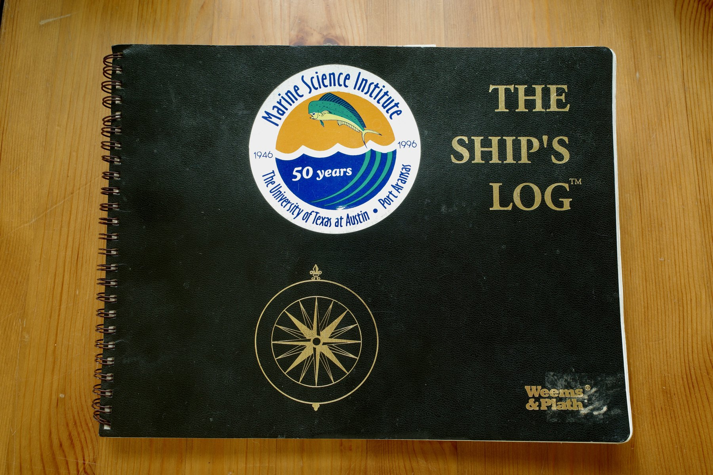
Marine Science Institute 1946 1996 50 years The University of Texas at Austin - Port Aransas THE SHIP'S LOG™ Weems® & Plath
Page 2
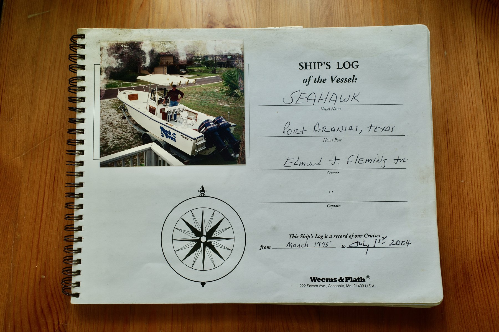
SHIP'S LOG of the Vessel: SEAHawk Vessel Name Port Aransas, Texas Home Port Edmund J. Flemings Jr. Owner '' Captain
This Ship's Log is a record of our Cruises from March 1995 to July 15th 2004
Weems & Plath® 222 Severn Ave., Annapolis, Md. 21403 U.S.A.
Page 3
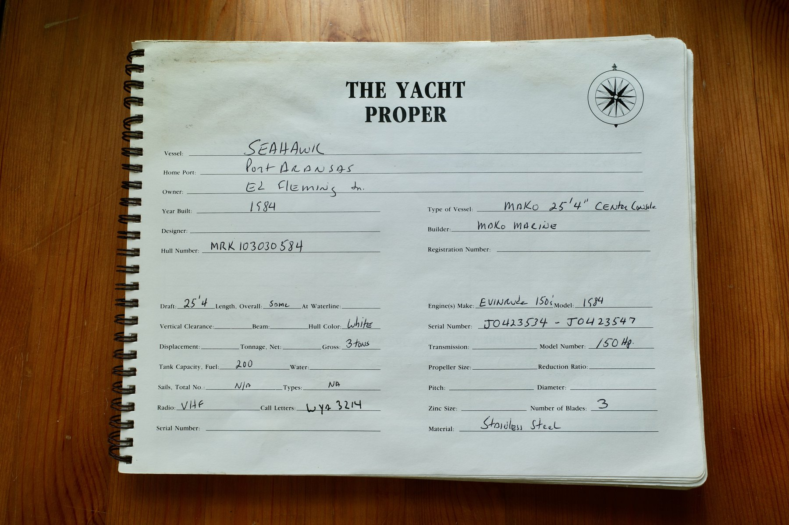
THE YACHT PROPER
Vessel: SEAHAWK Home Port: Port Aransas Owner: EL FLEMING Jr. Year Built: 1984 Designer: Hull Number: MRK103030384
Type of Vessel: MAKO 25' 4" Center Console Builder: Mako Marine Registration Number:
Draft: 25' 4" Length, Overall: Some At Waterline: Vertical Clearance: Beam: Hull Color: White Displacement: Tonnage, Net: Gross: 3 tons Tank Capacity, Fuel: 200 Water: Sails, Total No.: N/A Types: NA Radio: VHF Call Letters: WYZ 3214 Serial Number:
Engine(s) Make: EVINRUDE 150's Model: 1984 Serial Number: J043534 - J0423547 Transmission: Model Number: 150 Hp. Propeller Size: Reduction Ratio: Pitch: Diameter: Zinc Size: Number of Blades: 3 Material: Stainless Steel
Page 4
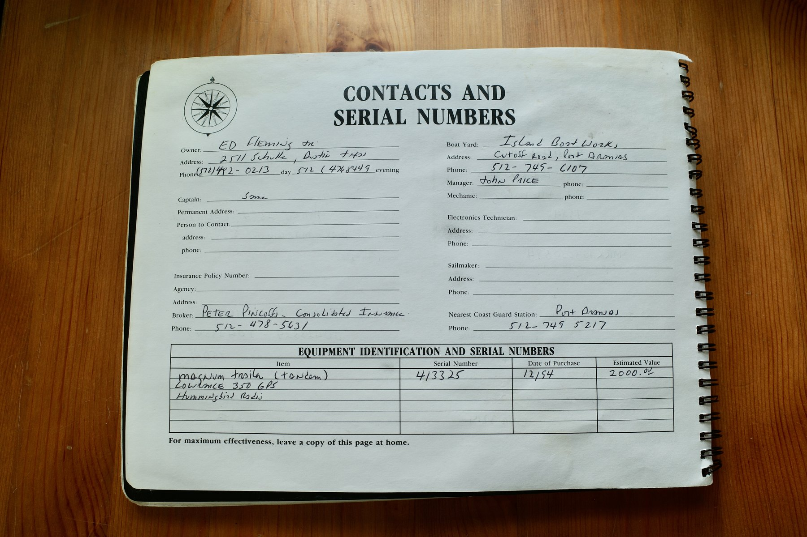
CONTACTS AND SERIAL NUMBERS
Owner: ED Fleming Jr. Address: 2711 Schultz, Austin, Tx 7701 Phone: 974-0213 day 512 478-4849 evening
Captain: Some Permanent Address: Person to Contact: address: phone: Insurance Policy Number: Agency: Address: Broker: Peter Pincols Consolidated Insurance Phone: 512-478-5631
Boat Yard: Island Boat Works Address: Cutoff Road, Port Aransas Phone: 512-745-6107 Manager: John Paice phone: Mechanic: phone: Electronics Technician: Address: phone: Sailmaker: Address: phone: Nearest Coast Guard Station: Port Aransas Phone: 512-745-5217
EQUIPMENT IDENTIFICATION AND SERIAL NUMBERS Item Serial Number Date of Purchase Estimated Value magnum trolla (tandem) 43325 12/54 2000.00 Lowrance 350 GPS Humminbird Radio
For maximum effectiveness, leave a copy of this page at home.
Page 11
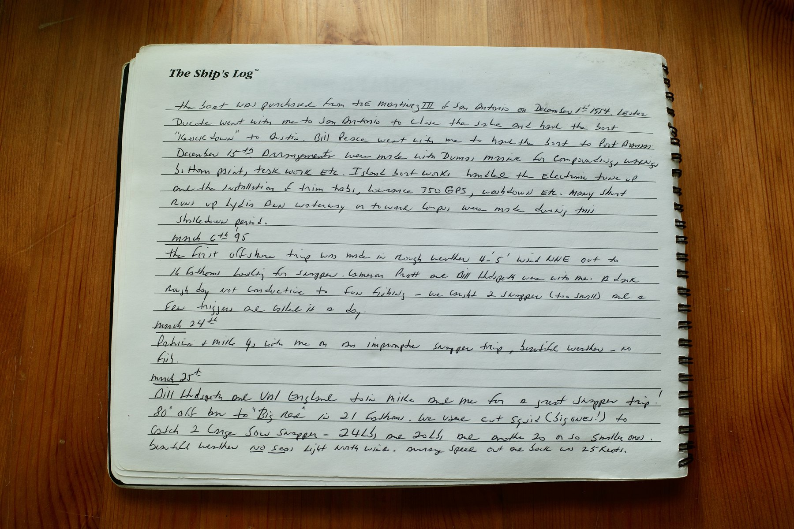
the boat was purchased from Joe Martinez III of San Antonio on December 1st 1994. Lester Ducote went with me to San Antonio to close the sale and haul the boat "Knock Down" to Austin. Bill Peace went with me to haul the boat to Port Aransas. December 15th Arrangements were made with [Dumas?] Marine for compounding, waxing, bottom paint, teak work Etc. Island boat works handled the Electronic tune up and the installation of trim tabs, Lowrance 350 GPS, washdown Etc. many short runs up Lydia Ann waterway or toward Corpus Christi were made during this shakedown period.
March 6th 95 the first offshore trip was made in rough weather 4′–5′ wind NNE out to 16 fathoms looking for snapper. Cameron Pratt and Bill Hudspeth were with me. A dark rough day not conducive to fun fishing - we caught 2 snapper (too small) and a few triggers and called it a day.
March 24th Patricia & Mike go with me on an impromptu snapper trip, beautiful weather - no fish.
March 25th Bill Hudspeth and Val [Engelhal?] join Mike and me for a great snapper trip! [80′ off on to?] "Big [rock?]" in 21 fathoms. We [were?] cut squid (Big ones!) to catch 2 large sow snapper - 24lbs and 20lbs and another 20 or so smaller ones. Beautiful weather NO seas light north wind. cruising speed out and back was 25 knots.
Page 12
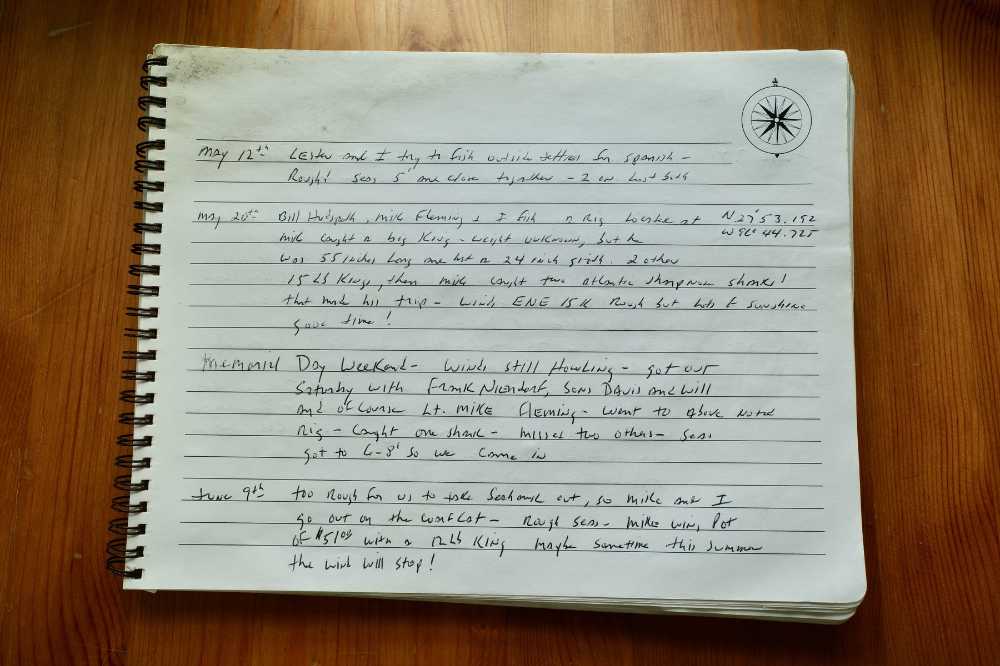
May 12th: Lester and I try to fish outside jetty for spanish - Rough! Seas, 5' and close together - 2 on last drift
May 20th: Bill Hedgcoth, Mike Fleming & I fish a rig, hooked at N27°53.152 mile, caught a big king - weight unknown, but he W96°44.925 was 55 inches long, one bite - a 24 inch spanish. 2 other less lucky than Mike caught two atlantic sharpnose that had hit trip - wind ENE 15kt Rough but lots of sunshine good time!
Memorial Day Weekend - Wind still Howling - got out Saturday with Frank Niederhof, sons David and Will and of course Lt. Mike Fleming went to Qbeck noted rig - Caught one shark - missed two others - seas got to 6-8' so we came in
June 9th: too rough for us to take Seahorse out so Mike and I go out on the WaveCat - Rough seas - Mike wins pot of $150! with a 12lb King Maybe sometime this summer the wind will stop!
Page 13
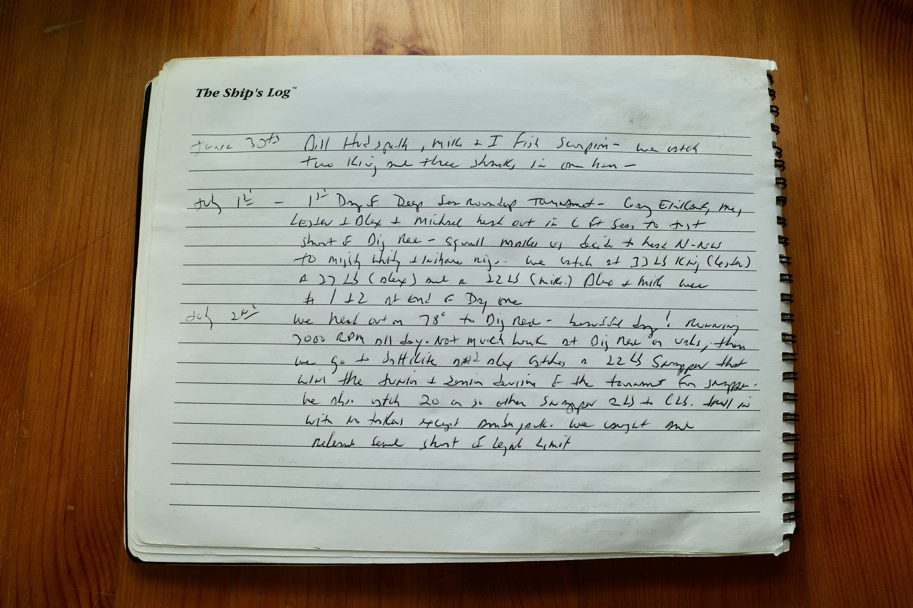
June 30th Oil Hodgepeth, Mike & I Fish Scorpion - we catch two king and three shark, in on time -
July 12th - 1st Day of Dogs Son Worship Tournament - Corey Elick[?], Meg, Lesley & Ole[?] & Michael head out in C.F. Seen the start short of Dig. Reef. Several marks up deck to head N-NW to mild, windy, lultime nite. We catch at 37 LS King (captain) a 222 LS (ole[?]) and a 113 LS (Mike). Ole & Mike lose #122 at end of Day one.
July 26th We head out on 78° to Dig. Reef - beautiful day! Running 700 RPM all day. Not much luck at Dig. Reef or voly, then we go to Shortline out edge Gated, a 226# Snapper that wins the derby & Semin during of the tournament for Snapper. We also catch 20# or so other Snapper 2# in CLS. Back in with no taking weight. Omnipack. We caught and released several short of legal limit.
Page 14
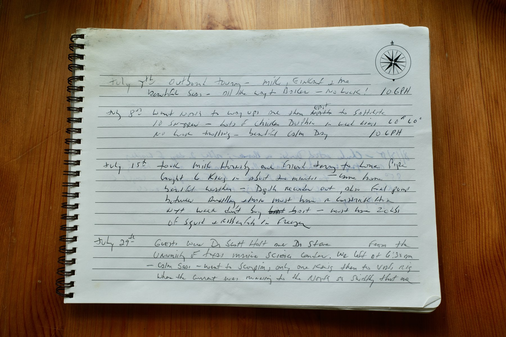
July 7th Outboard tourings - Mike, Einlauf & me beautiful seas - all the way to Baileys - No luck! 10 GPH
July 8th Opt. Went north to wash up one skeg, bottom to Saltkettle 10 snappers, lots of chubers, Dolphin in weed line 60° 60° no luck trolling - beautiful Calm Day 10 GPH
July 15th Took Mike, Hardesty and friend, Jenny to Hone. Spit Caught 6 Kings + pilot, 20 minutes - some home beautiful weather - Dogfish recircler out plus fuel pump between Devil's, shore must have a control ck tho WTE weird only Sun, but quiet - must have Zoë's [illegible] of squid & cell salt in freezer
July 29th Guests. Wow Dr Scott Holt and Dr Stone from the University of Texas Marine Science Center. We left at 6:33 am - Calm seas - Went to Sampling only one king, then to VIMS rig when the current was running in the NORTH so swiftly that our
Page 15
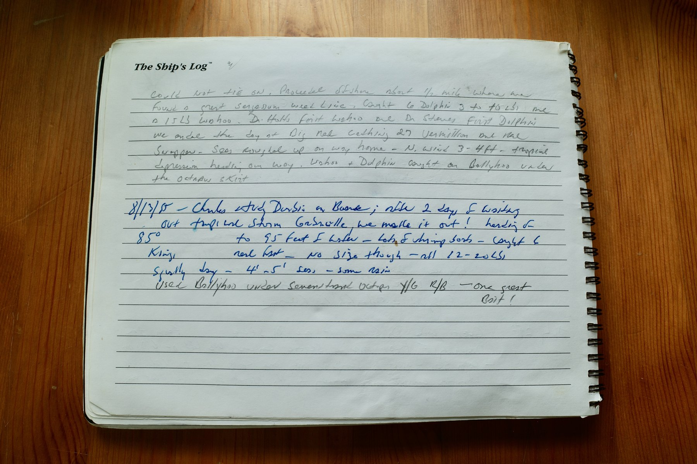
Could not tie on Proceeds station about 1/2 mile where we found a great seagrass weed line. Caught two Dolphin (3 to 40 lbs) and a 15 lb Wahoo. Dr. H. H. first Dolphin on Steamer. First Dolphin we made the Tigris male catching and 27 Vermillion out there. Snapper - Seas roughed up way home - N. wind 3-4 ft - stayed Depression heading our way. Unlucky Dolphin caught on Ballyhoo under the Octopus skirt
8/1/98 - Charles, Steve, Derrick, & Bonnie; after 2 day of waiting out tropical storm Gertude, we make it out! heading S 85° to 95 feet of water - lots of string snots - caught 6 King, one lost - no size though - all 12-20 lbs. Squally day - 4' to 5' seas, some rain. Used Ballyhoo under seaweed, trolled octopus 4/6 4/8 - one great bit!
Page 16
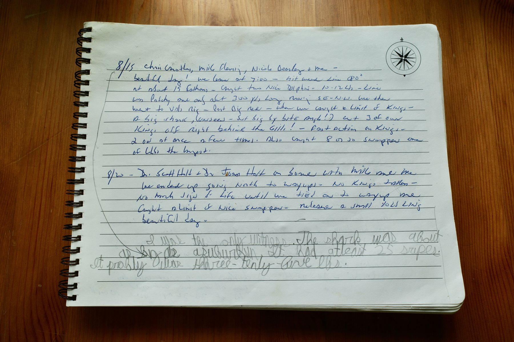
8/15 Chris, Courtney, Will (Harris), Nick, Deasley & me - Beautiful day! We leave at 7:00 - hit sword line 8:00 - not out at 15 fathoms. Caught two nice dolphins. 15-17# - lines less patchy, one out 300 yds, big whale 150+ new, we then went to Vosh Rig, Pont Dig Red - other line caught a limit of Kings - p. big shark (nursed. Set big by bite angle!) but 3 of our Kings off right behind the gill! Fast action on Kings 2 at at once a few times! Also caught 8 or so snappers one at 6 lbs the largest.
8/20 - Dr. Scott Holt & Dr. Jason Holt on board with Will, me. We have under lap going north to wayward - no King salmon - no much sign of life until we tied on to way up new. Caught a limit & nice snapper, release a small void king beautiful day.
I was the only winner. The sharks were about as sharp as dolphin. We had at least 25 snapes. It pretty other three-twenty five lbs.
Page 17
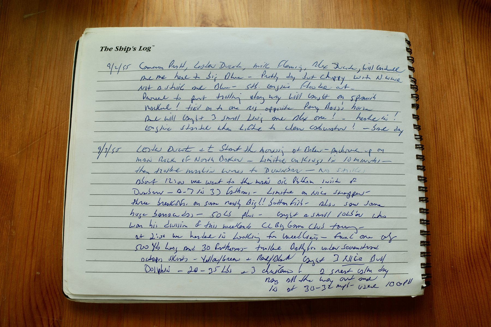
9/4/88 Common Profit, Leslee Ducks, Mike Fleming, Alex Ducken, Will Cardell met me here & Big Dave - Pretty day but choppy with N. wind - Not a strike one! Slow. Gsk. engine flaked out. Phoned to port. Holiday along way. Will consult on Spanish mackerel. Tied on one rig, opposite Penny Bogue, how! Deb will light 3 small lites, one plug one! - headache!! Engine started when lifted to clean carburetor! - Some day
9/5/88 Leslee Ducks & I start the morning at Delray - Anchored up on main rock off North Onslow. Little on King - 10 barracuda - the hooked marlins, home to Onwason - No Strikes. About 12 in we went to the main Osp. within inside of Onslow - A.M. is 33 fathoms. Limited on nice snappers - three snappers on same rig!! South fill, Alex's son, some huge smacks, 50 lbs plus. Caught a small 105 lb who won his division & this weekend CB By Game Club tourny. At diis we headed in looking for weed lines - found one only 200 yds long and 30 fathoms - trolled dolphin under conditions - deep kings & yellowfins - yellowfin! Caught 2, Will's Owl dolphin 20-35 lbs & 3 chickens, 2 meats (of the day) near all the way out, one 10 GPH, 15 at 30-32 mph; wise 1000!!
Page 18
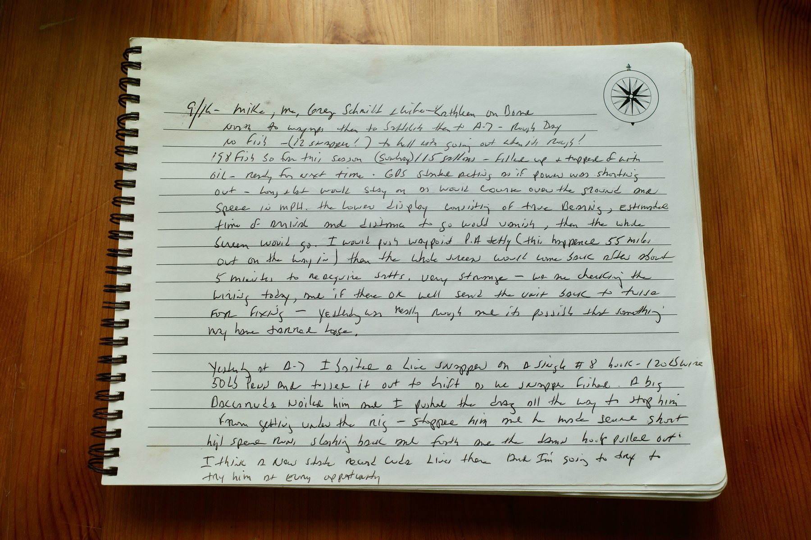
9/11 - Mike, Mr. Corey, Schwall, Willie, Kathleen on Diane went to swap them to Soltush then to A7 - Rough Day No fish. (12 snappers?) 7 bull wits going out while it rough! 158 Fish so far this season (Sunday). Galley - Filled up + topped off with oil - ready for next time. GPS (Shawn acting as if power was shorting out - any light would stay on or would course over the ground once. Squee is mplt. The lower display (writing) of three beams, estimate time of marind and distance go wold vaning, then the whole screen would go. I would open watproof P.A. attly (This happened 55 miles out on the bay!) then the whole screen would come back after about 5 minutes to recognize satt. Very strange - we are checking the wiring today, none of these ok will send the unit south to Fulla for fixing - Yellody was really rough, might me it possible that something my have stormed loose.
Yellody at A-7 I notice a line snapped on a single #8 hook - 120 (Swinese 50 Lb Peur) out there. I let out the hist on the wrapper. Caught a big. Decranned, notice him that I pushed the drag all the way to stop him from gettig under the rig - stopped him and he made several short high speed runs, darting back and forth once the dang hook pulled out.
I think a new shade round code lives there. But I'm going to drop + try him at every opportunity
Page 19
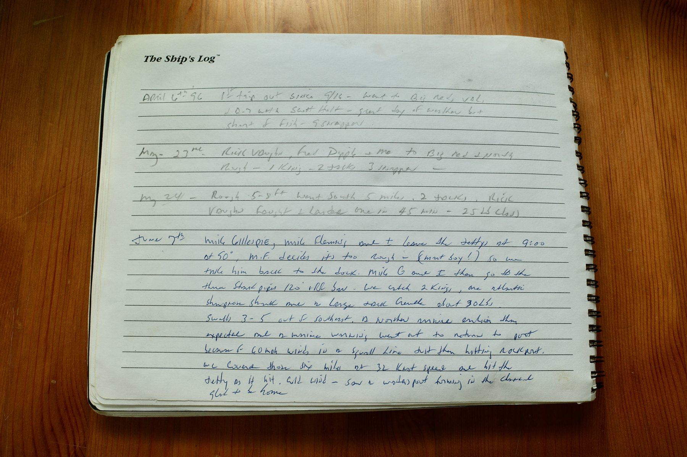
April 6th, 96 1st trip out since 9/16 - Went to Big Red, vol. Don and Scott Hills - great day of weather but short of Fish. Snapper
May. 22nd Richie, Vaughn, Fred Digiti & me to Big Red, rough, Vaughn - 1 Keuji, 25# class, 1 Snapper
May 24 - Rough, 5-6 ft. Went South 5 miles, 2 hours, Richie Vaughn fought & landed one in 45 min. - 25 lbs class
June 7th Mike Gillespie, Mike Flournoy, went & leave the jetty at 9:00 at 50°. M.F. decides it’s too rough! (smart guy!) so we take him back to the dock. Mike G. out to then go to the three standpipes 120' deep. We each 2 Keuji, one Atlantic snapper - stand made 1 large one chunk, about 30 lbs Swelly 3-5' out of southwest. Weather worsens earlier than expected and no marine warning went out to return to port because of 60 knot winds, in a squall line dust then hitting rockports. we covered those 25 miles at 32 knot speed and hit the jetty as it hit. Wild wild - saw a waterspout forming in the channel. Glad to be home
Page 20
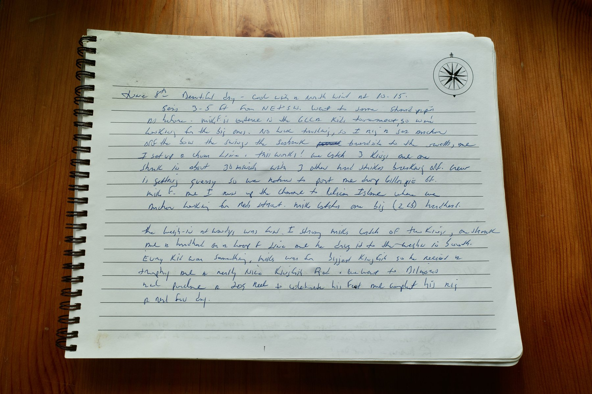
June 9th Beautiful day. Cool like a north wind not 10-15°. Seas 3-5 ft from NE/ESW. Went to same stoned spot as before, midfish entrance in the GLCA kids tournament, so we're looking for the big ones. No whales today, just 2 big & 1 sea meadow off the bow. The swing the seahorse and transit to the swell, now I set up a chum line - this works!! We catch 3 Kingis and one shark in about 30 minutes with 4 other hand strikes breaking off. Crew is getting greedy - two returns to port the day Gilligale St. milk F. out the mouth of the channel to Wilson Island where we anchor looking for reds & trout. Milk catches one big (2.5) herbert.
the highlight actually was Liv! Strong milk, catches of two Kingis, outstruck male hooked on a loop & line and he drags it to the anchor in South. Every kid saw something, milk won for biggest Kingfish, so he received a trophy, and a really nice Kingfish Rod, we head to Bilbago and purchase a dog treat to celebrate his feat and comfort his rig a not fun day.
Page 21
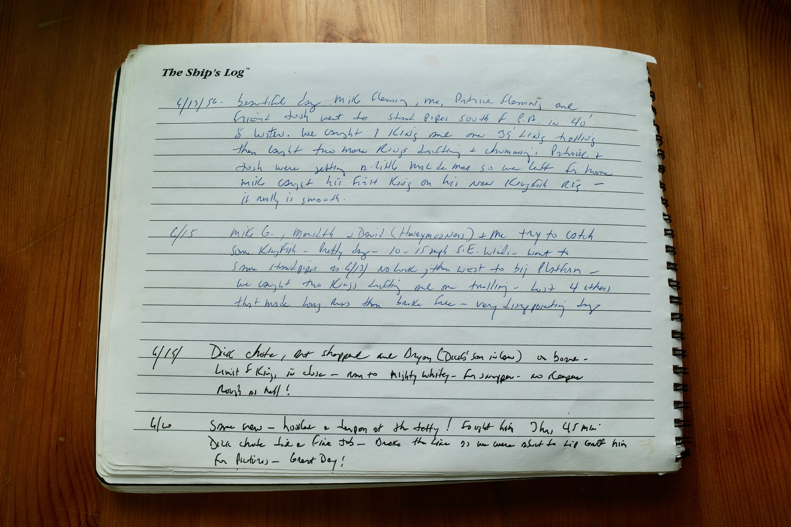
4/13/96 - Beautiful day. Mike (Fleming), me, Patricia (Fleming), and Glenn's dog went to short pipes south of P.R. in 40' of water. We caught 1 King, one 35' Ling (Phillip trolling) then caught two more Kings (Phillip + Christian). Patricia + dish were getting to Mike made me, so we left to home. Mike caught his first King on his new Keyfish Rig - it really is smooth.
4/15 Mike G., Meredith + David (Hauymoorer?) + me try to catch some Kingfish. Pretty day, 10-15mph S.E. winds. Went to same strategies as 4/13, no luck, then went to big Platform - we caught two Kings (cutting and on trolling, but 4 others that made long runs then broke free - very disappointing day.
4/19/ Dick chute, Curt Shepherd and Bryan (David's son in law) on board - Limit of King, in close - run to twilight whiting - En snapper - no grouper. Rough as hell!
4/20 Some crew - hooker + lumpen at the jetty! Fought him Thu. 45 min! Dick chute Liz + Fine job - Broke the line on one about to hit! Great Day!
Page 22
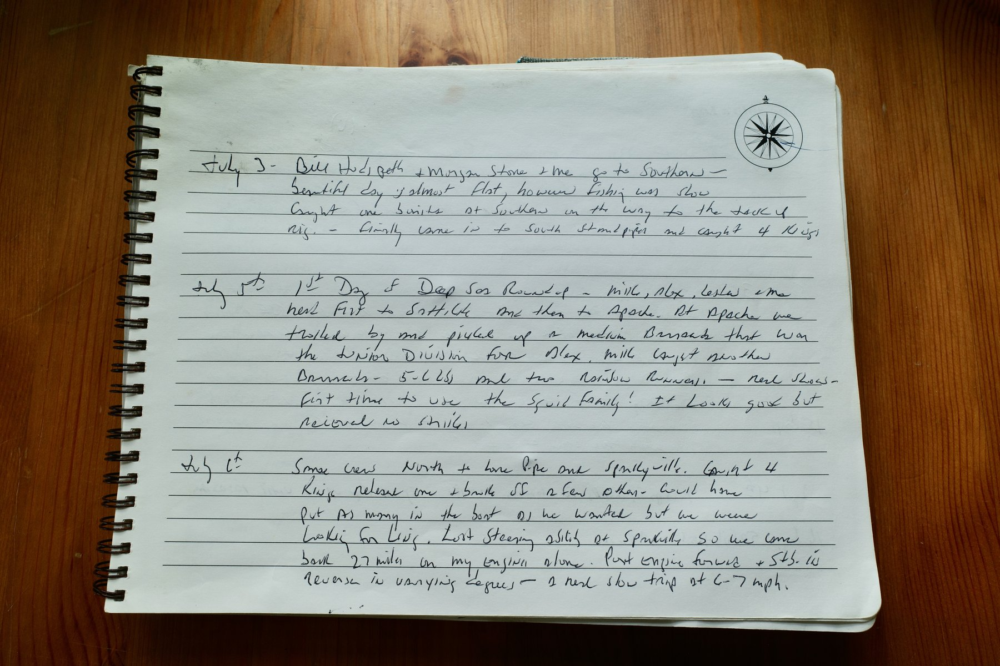
July 5 - Out Wedg[?]th + Mangum stove & line go to Southerns — beautiful day + almost flat however fishing was slow. Caught one bonito at sundown on the way to the outer rig. Family came in to South standpoint and caught 4 king’s
July 5th 1st Day of Deep Sea Roundup - Mills, Nlox loaded & we head Fit to Southside me then to Apache. At Apache was hooked by mid piece of a medium Bonacho that was the Junior Division fish. Nlox mill caught another Bonacho. 5-6 lbs and two Bonito runners. Near shoal— first time to use the Squid Family. It looks gave but received no strikes.
July 6th Some crews North to Live Pipe and Sprangville. Caught 4 King’s release one bonito so few other could have put as many in the boat as he wanted but we were looking for King’s. Lost steering ability at Sprangville. So we come back 22 miles on my cousin alone. Put engine forward & Stb. is reverse in varying degrees & made slow trip at 6–7 mph.
Page 23
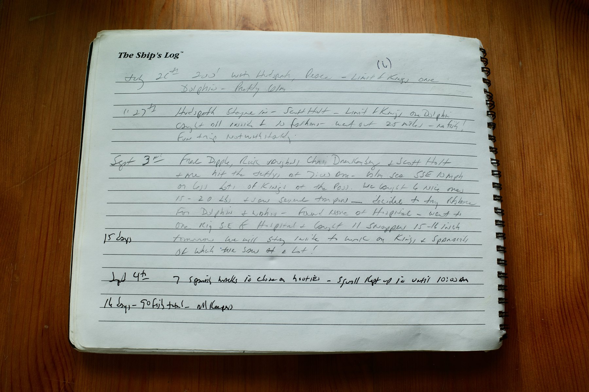
July 26th 2001 with Hedgepth, Reese - Limit 6 Kings, one Dolphin - Pretty calm
"27th" Hedgepth, Shope in South Hatter - Limit 6 Kings one Dolphin. Caught all inside, 1 to fighten - went out 20 miles - nothing. Fun trip. Not windy.
Sept 3rd Turk Dipple, Rick [word?], Chris Dunningley, + Scott Holt + Steve hit the depths at 210's. Seas bottom sea SSE 10 mph or less, lot. of Kings + one Poso. We caught 4 nice ones 15-20 lbs, 1 new seacure too parn - Decided to try Albemarle for Dolphin + Wahoo. Found none off Hospitier - went to one King S.E. of Hospital. Caught 11 snapper 15-16 inch. Tomorrow we will stay inside to work on Kings & Spanish of which I've saw a lot!
15 Days
July 4th 7 Spanish macks, 10 closer on histories - Spanish kept up in until 10:02 am
16 Days - 50 Filtrals - All keepers
Page 24
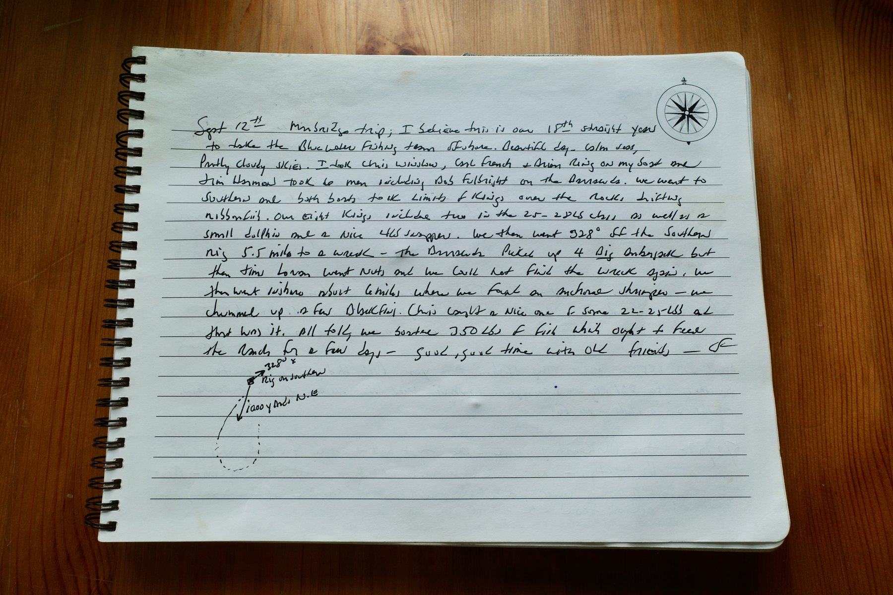
Sept 12th Min. Size trip. I believe this is our 19th straight year to take the bluewater fishing team offshore. Beautiful day, calm seas, partly cloudy skies. I took Chris Winslow, Carl French & Stirling Rais on my boat and Jim Howard took 6 men including Bob Fulbright on the Arracuda. We went to southern end, both boats, to the line of buoys along the rocks, hitting nicesmails. Our first kings include two in the 25 - 28 lbs class, as well as a small sailfish and a nice little snapper here then went 328° off the southern rig, 5.5 miles to a wreck - the Arracuda picked up 4 big amberjack but the timing layns went nuts and we could not find the wreck again. In the water fishing wasn't limited, where we had an anchor. Shrimpers were churned up a few of the outfield. Chris caught a nice one of some 22-23 lbs at that was it. All told we boated 350 lbs of fish which ought to feed the ranch for a few days. Great, great time with old friends. — JC
328° rigs and anchor 1000 yards NO. (diagram)
Page 25
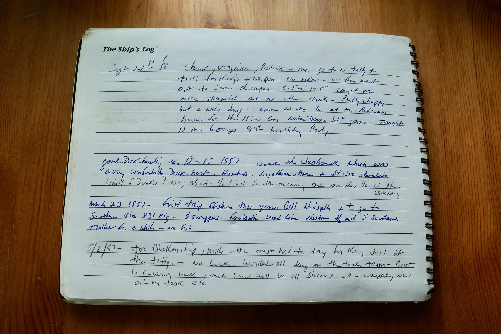
Sept 21st - 52 Chuck, Virginia, Patrick & me go to N. jetty to troll for Kings & Tarpon. No takes - we then went out to some shrimpers. 6 mi., 125°. Caught one nice spanish and one other strike. Pretty choppy but a nice day to come in to be at Mrs. Robinson's house for the Ill vs. Notre Dame UT game. Tonight 13 min. George's 90th birthday Party.
Good Duck Hunting, Jan 12-15 1957 - used the Seahawk which was a very comfortable duck boat. Hunted Lighthouse, horse & St. Joe islands. Limit 8 ducks, no; about 1/2 limit in the morning one another 1/2 in the evening
March 23 1957 - First trip offshore this year. Bill Hodge & I go to southern via 831 rig - 8 snapper. Fantastic weed line mixture of milo & southern. Trolled for a while - no fish
5/2/57 - Joe Doldenship & Mike, me, just had to try for King just off the jetty - no luck. Wonder all day on the task train. Boat is running well. pond soon will be all shriveled up - nursery. New oil on task etc
Page 26
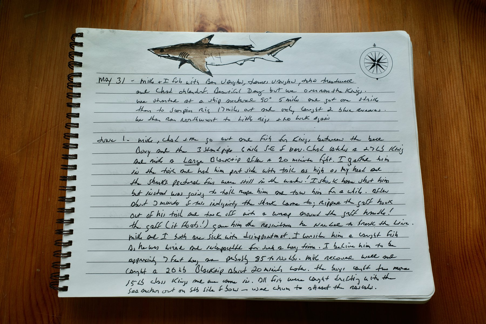
May 31 - mike + I fish with Ben, Vaughn, James, Vaughn’s [child?] Shaylee and Chad, separate. Beautiful Day but we overran the Kings. We started at a ship anchored 90° 5 mile, one got one shark, then to dolphin rig (1 mile out and only caught 2 blue runners.) We then ran northwest to littl[e?] rips + no luck again
June 1. mike, Chad & me go out. One fish for kings between the base buoy and the Stampede aid[e?] S of bow. Chad caught a 25# King, One mile - a large dusky(?) after a 20 minute fight. I gaffed him in the tail; one had him part side with tail as high as my head and the shark’s pectoral fin was still in the water! I should have shot him but instead was going to tail rope him one too thin for a while. After about 5 minutes of stal[e?], incredibly, shark came to, ripped the gaff hook out of his tail and two of us it swam around the gaff handle! The gaff (it floats!) gave him the resistance he needed to break the line. Mike and I both were sick with disappointment to consider him a caught fish as he was wirie and uncatchable such a long time. I believe him to be approximately 7 feet, maybe pushing 8.5 or 10 w/LS, mike recovered. Caught a 20# king, Chad 55# king, boys caught two more 15# chas[?] kings, one more cuda. All fish were caught south of the sea anchor out on stb side + bow & were chum to attract the rascals.
Page 27
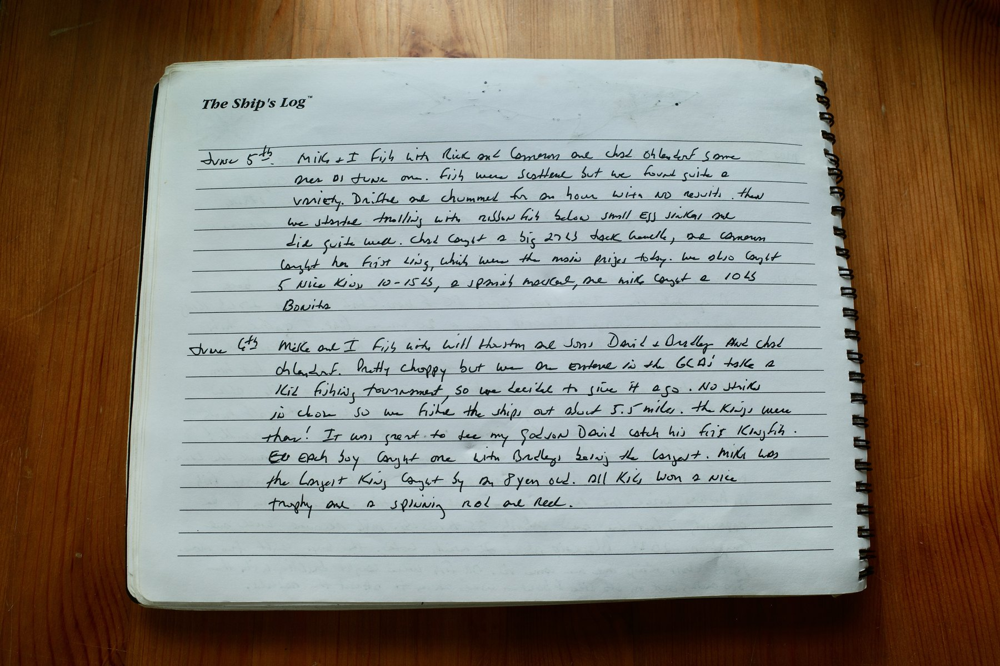
June 5th. Mike & I fish with Rick and Cameron and Chad Oblander. Some new OI stove one. Fish were scattered but we found quite a variety. Drifted and chummed for an hour with no results. Then we started trolling with results just below small EIJ which one did quite well. Chad caught a big 20 lb Jack Crevalle, and Cameron caught his first King, which won the man's prize today. We also caught 5 mile King, 10-15 lbs, a spanish mackerel, one mile caught a 10 lb Bonito.
June 6th. Mike and I fish with Will Thornton and sons, David & Bradley. And Chad Oblander. Pretty choppy but won one entree in the GCA's Take a Kid fishing tournament. We were decide to give it a go. No strike is close so we hit the ships out about 5.5 miles. The Kings were there! It was neat to see my Godson David catch his first Kingfish. Ed each boy caught one with Bradley being the largest. Mike has the largest King caught by an open owl. All kids won a nice trophy and a spinning rod and reel.
Page 28
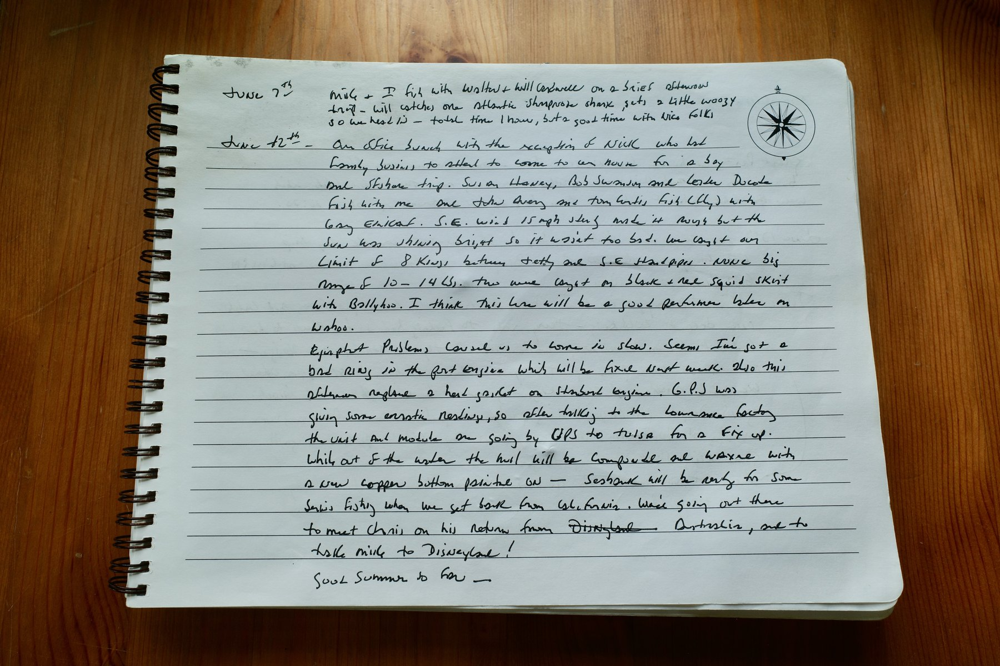
June 7th -
Nick & I fished with Watslow? will convene on a Skiff afternoon trip. Will catch one Atlantic Sharpnose shark, get a little woozy somewheres - took time, I know, but a good time with his folks.
June 12th -
An office launch with the reception of Nick who had family business to attend, so came on an hour in for a shy Mac Sebree trip. Suzi, Harvey, Bob Summers, and Lenden Dealer fished with me and other Anglers on tiny early fish (CL?), with Gary ethical. One thing I say these days, made it rough but the sun was shining bright so it wasn't too bad. We caught our limit of 8 Kings between both, and one S.E. Snapper, never big. Many of 10-14 lbs, two were caught on black + red squid skirt with Ballyhoo. I think this lure will be a good purchase later on, whoo.
Equipment problem caused us to come in slow. Seems I've got a bad ring in the port engine which will be fixed next week. Also this old/new raglan on head gasket of starboard engine. (GPS low). Givin some erratic readings, so after talking in the boathouse sorting the visit out, module are going by UPS to Tulsa for a fix up! Whil out of the water, the hull will be comp[leted?] and waxed with a new copper bottom painted on - Seaborn will be only in some series fishing when we get back from California, where going out there to meet Chris on his return from Disneyland. Outrushia, out to take Mike to Disneyland!
Good Summer so far -
Page 29
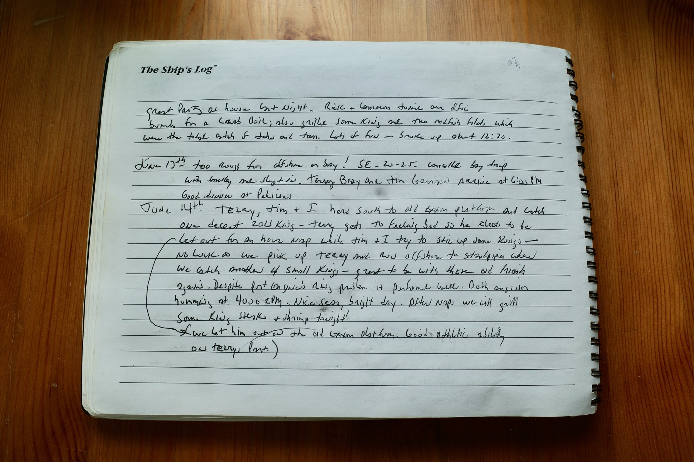
Great Party at house last night - Rick + Connie's tonic and chili, brenda for a crab boil, also grilled some king and the relish, kids under the table, batch of [data?] met the tom. Lots of fun - snuck up about 12:30.
June 13th - Too rough for offshore on bay! SE - 20-25. Convulse bay trip with smoky one shot + in. Tracy Bray and Tim (Gavins) arrive at 6:15 PM. Good tideview at Pelican
June 14th - Tezzy, Tim + I head south to old Exxon platform and catch one decent 20# king - Terry gets to feeling bad so he elects to be let out for an hour, nap while Tim + I try to stir up some kings - no luck so we pick up Terry and run offshore to Stagrass where we catch another 4 small kings - tend to be with them, old kinds again. Despite port engine, runs perfect - panorama swell. Odd engine hums, not 4000 RPM. Nice, seen bright day. After naps we will grill some king steak + things tonight! (Connie let him out on the old Exxon platform. Good noththing visibility on Tezzy Point.)
Page 30
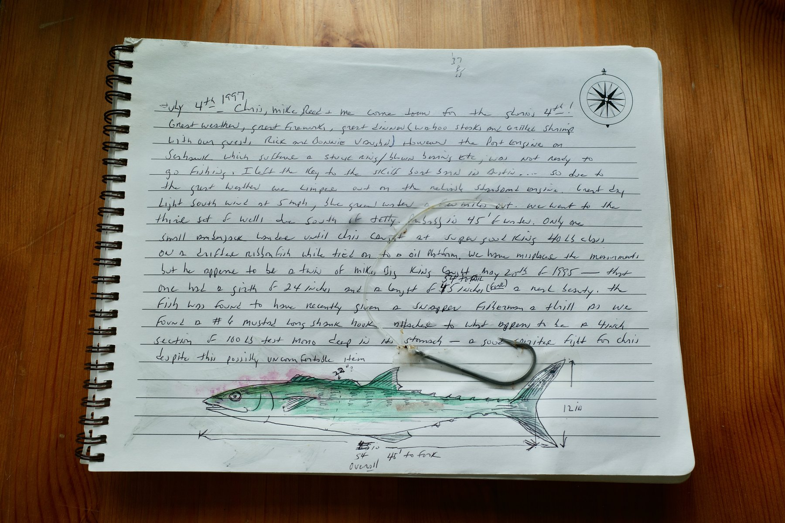
July 4th 1997 Chris, Mike Reed & me come down for the July 4th. Great weather, great fireworks, great dinner (wahoo steaks on grille, shrimp with pen pesto. Rick and [Osmie? Vauter?]). However, the port engine on SeaHawk, which we stow at Steve Riley's, blows bouncy etc. was not ready to go fishing. Left very late, the Rick said sand is dying... So due to the great weather we limped out on the rebuilt starboard engine. Great day. Light south wind at night, blue green water inside, out. We went to the third set of wells, deep. Caught only 1 king 45" fork lndex. Only one small bonitajack landed. Chris landed king (approx 46 lbs class) on a wireline nishfish while tied on to oil platform. We have misplaced the monument, but he appears to be a thin old male. Big king caught may 26th 1985. This one had a girth of 24 inch, an length of 49 inches (fork) a real beauty. The fish was found to have recently gulped a snapper stillermen & thrill as we found a #6 mustad long shank hook - which appears at the end of a thick section of 100 lbs test mono deep in his stomach - a souvenir, igniting the fight for Chris despite this possibly uncomfortable item.
<Illustration of fish, labeled:> 32" 12 in K 45" to fork overall
Page 31
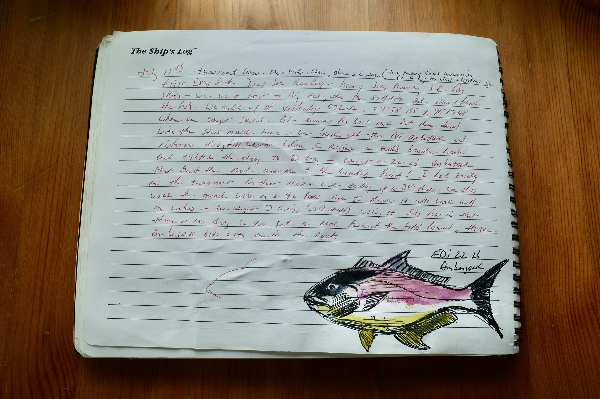
July 11th – tournament crew: Me, Mike, Chris, Abby & Lyleen (this heavy seas running so Kelly, Me, Clay & Elliott sat this go) First Day of Derby – heavy seas, running SE – rain Skip – We went first to dig near the satellite and then found the fish. We ended up at Yellowbuoy 672-A – 27085.151 x 96.17.40 when we caught several live runners for bait and put them aboard with the shad mack. Mike broke off two BT on mistake and untwisted Kingston leader before release as would. Swizzle looked and tilted the drag to 0 drag, caught a 22 lbs on shank. That beat the rod one in the shankly Point! I led briefly in the tournament to then disappear, ending up at 3rd place. We also used the manual wire on a 40 hand (not sure it will work well on wides – he caught 2 king (one SMALL) w/ jig. It’s fun in that there is no drag so you get a neat feel of the full round. Three on layout bites with one in the boat.
EDI: 22 lb on layouts
Page 32
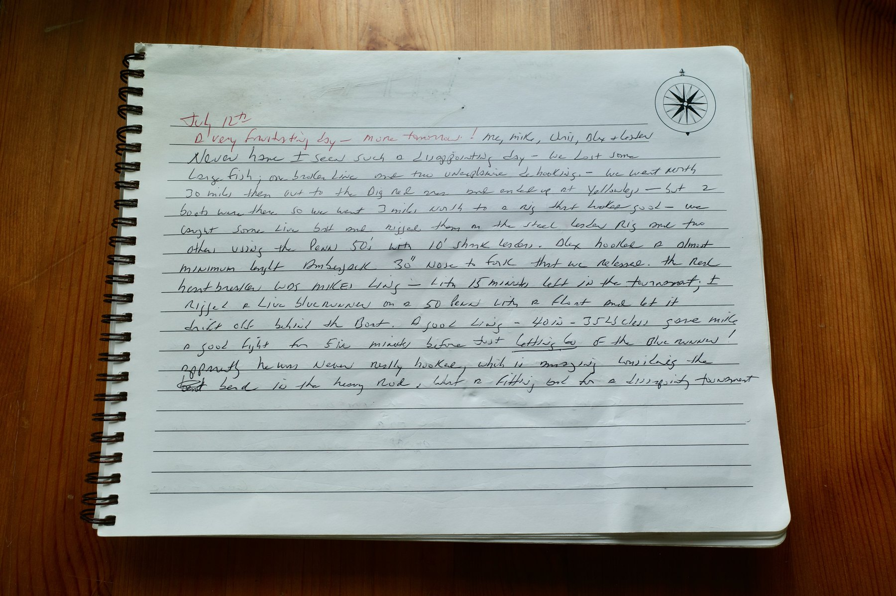
July 12th A very frustrating day – more tomorrow! My, Mike, Uni, Oly, & Lester Never have I seen such a disgustingly day – We lost some large fish; one broken line, one or two unexplainale hookings – we went north 30 min, then out to the Dig and around the pocket at Yelloweye – but 2 boats were there so we beat 1 mile north to a rig that looked good – we caught some live bait, much bigger than on the steel leader rig, one two other using the Penn 50S, with 10' shark leader. Oly hooked a almost minimum weight Bombaydall 30" nose to fork, that we released. The next heartbreaker was MILKED Ling – little bruiser left in the turnwater & rifled a live bluenunner on a 50 level lift, a flat one let it drift off behind the boat. A good Ling – 40in – 35lb cls gave Mike a good fight for five minutes before just letting go of the blue runner! apparently he was Never really hooked, which is amazingly considering the beat head to the heavy ruck. What a fitting end to a disgusting tournyment
Page 33
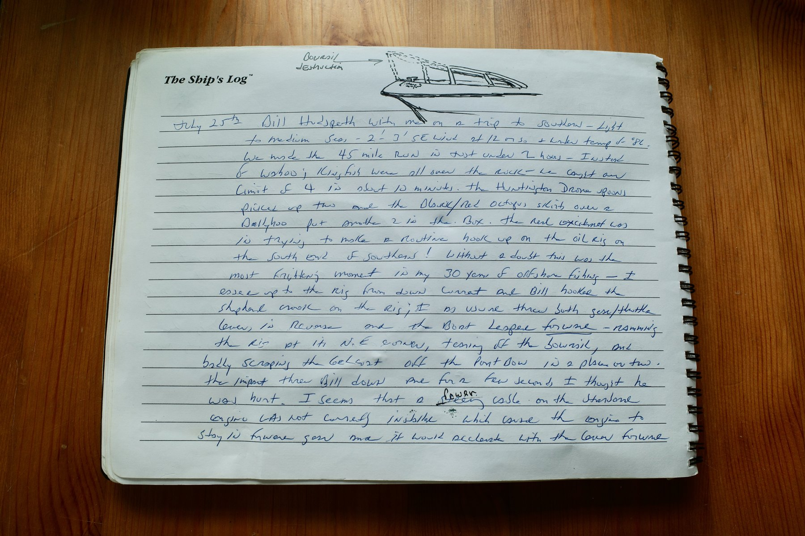
Bowrail dent/scratch [illustration]
July 25th Bill Hedgeseth with me on a trip to Southton - Light to medium seas, 2-3' SE wind at 12 m/s & water temp of 84C. We had the 45 mile run in just under 2 hours. I spotted 6 Whoo! Kingfish were all over the rigger - We caught our limit of 4 & is about to minutes the Huntington Draw opened. Picked up two on the Daisy/red octopus skirts and a Ballyhoo put in make in short order. The next excitement was in trying to make a routine hook up on the oil rig at the south end of Southton! Without a doubt this was the most frightening moment in my 30 years of offshore fishing - I eased up the rig, fwd, down current and Bill hooked the snapper enamel on the rig! It was at that sudden gust/bustle leew is reverse and the Boat leaped forward - ramming the rig at its NE corner, tearing off the bowrail, and badly scraping the gelcoat off the port bow in a place or two. The impact threw Bill down me far down & I thought he was hurt. It seems that a loose hose on the starboard engine has not currently invisible which caused the engine to stay in forward gear near it would accelerate with the lower forward
Page 34
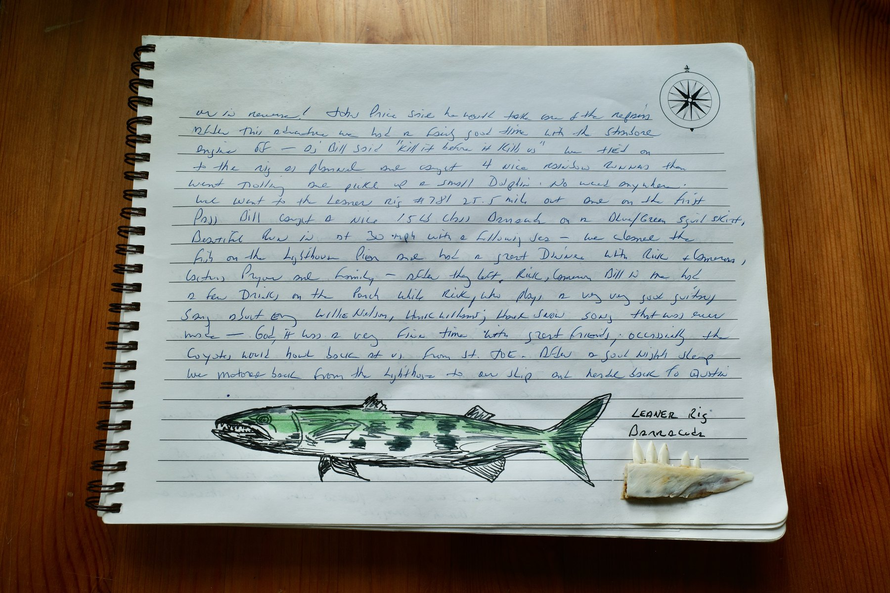
we is renamed. John Price said he 'tould' took one of the papers. After this adventure, we had a fairly good time with the Stradone brethern off a oil skid. Killi behind with us. Head on to the rig as planned and caught 4 nice resident runners then went trolling, one pickup of a small Dolphin. No weed anywhere. Lure went to the Learner rig at 7:41 PM, out one on his first pay. Bill caught a nice 15# class Barracuda on an Olive/Green squid skirt. Beautiful run is not so hot with a following sea — we cleaned the fish on the Lighthouse Pier and had a great dinner with Chris & Brenna, Watson, Pragna, and family, while they left Rick, Conner, Will in the hole, a few drinks in the porch while Rick & Play in a very good stay. Song about Gary Willie Nilson (black lullaby/black stow song) that was never made — God it was a very first time with great friends, crossing the Coyote, would have back out from St. DCE. After a good night sleep, we motored back from the Lighthouse to our ship and headed back to Austin.
[Illustration of fish] LEARNER Rig Barracuda
Page 35
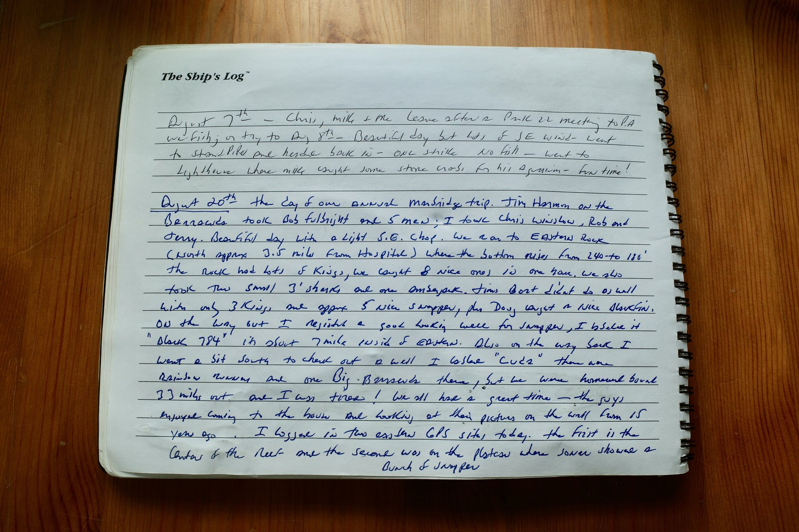
August 7th – Chris, Mike & the loon* after a Park 22 meeting to PA we fish, on try to Day yet. Beautiful day but lot of SE wind. Went to stump pile one handle broke in one strike. No fish. Went to Lighthouse where Mike caught some stone crabs, for his aquarium – fun time!
August 20th the day of our annual marriage trip. Jim Hamm on the Barracuda took Bob Fulbright and 5 men. I took Chris, Winslow, Rob and Greg. Beautiful day with a light S.E. chop. We ran to EASTERN ROCKS (counts approx 3.5 mile from hospital) where the bottom rises from 240' to 186'. The rocks had lots of Kisu, we caught 6 nice ones, 1 in one hour. We also trolled thru small 3 1/2's and one snapper, tuna great ticket as usual with only 3 Kisu, one group of nice snappers. Dog caught a nice bluefish. On the way out I rejected a good looking weed for snapper I believe it “blanc 794” it’s about 7 miles west of Eastern. Also, on the way back I went to sit south to check out a well I call “Cuda” there are resident nurses and one big Barracuda though just weren't. 33 miles out and I was there. Well had a great time – the guys enjoyed coming to the house and looking at their picture on the wall from 15 years ago. I logged in two eastern GPS sits today, the first is the center of the reef and the second was on the plateau where source observe a bunch of jumper
Page 36
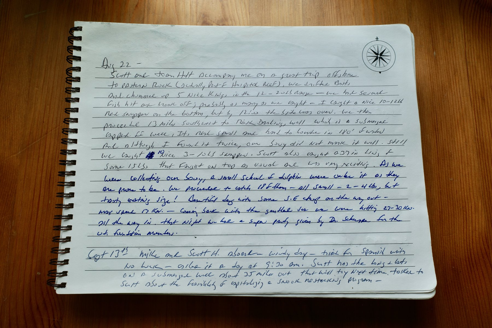
Aug 22 - Scott and Tom Htt accompany me on a great trip offshore to Eastern Rock (actually Petit Hattchet Reef). We trolled baits and chummers up 5 mile ridge in the 20-31 maybe - we had several fish hit and break off, probably as many as we caught - I caught a nice 10-12 lb red snapper on the bottom but by 12:00 the stick was over. We then proceeded 13 miles southwest to Mike's Darling, which is a submerge [submerged] bight of weed. Its rock is small one kind to locate is 180' of weed and it thought to Fuvallit twice, one guy did not make it well. Still! We caught 4 Nice 3-10# snappers. Scott also caught a 23? in Lij of some 15#'s that fought as they usual do—very exciting. After lunch collected own buoy, a small school of dolphin were under it as they are prone to be. We proceeded to catch off them all small - 2-4 lbs, but mostly eating size! Identified lfo with some S.E. chips on the way out - may speak to Kev. - Coming back with the sun the sea was love, hitting 27-30 kts. all the way in; that night we had a super party given by Dr. Schaper for the out. five star members.
Sept 13th Mike, me, Scott H. Absurd - windy day - thick for Spanish with no luck - order it a day at 9:30 am. Scott had the boat & lots of a submerge weed about 1/2 mile out that hit, try next time. Talked to Scott about the possibility of exploiting a snook networking program -
Page 37
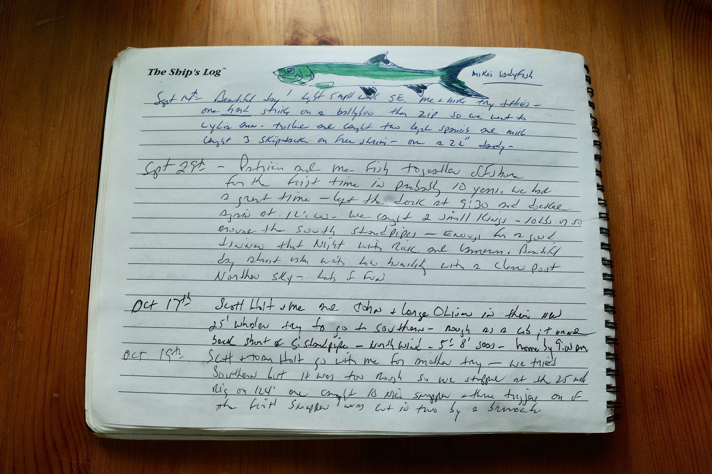
Miki's babyfish
Sept 17th - Beautiful day! 4-5 ft swell SE. Miki and Liza try stick — One hit strike on a ballyhoo then zip so we went to trolling area. Tucker one caught two light spanish one miki caught 3 skipjack on free shank, one 22” Judy.
Sept 25th - Patricia and Me fish together offshore for the first time in probably 10 years. We had a great time, left the dock at 9:30 and locked up rig at 11:45. We caught 2 small kings - 10 lbs or so around the south standpipe - enough for 2 good dinners that night with Rick and Shannon’s. Beautiful day, almost both with, two himself, with a clear post northern sky. – Lots of Fun.
Oct 17th – Scott, hint, me, and John & George. Olivia is their new 25’ whaler, they go so far south, never enough as it was it and back short of standpipe – wind/wind - SE 8’ seas. Home by 5 p.m.
Oct 19th Scott room, hint, go with me for mother’s day. We tried southeast but it was too rough, so we stopped at the 25 mile rig on left, miki caught 16 and snapped – three tuna one of the first snapper turns out is two by a barracuda
Page 38
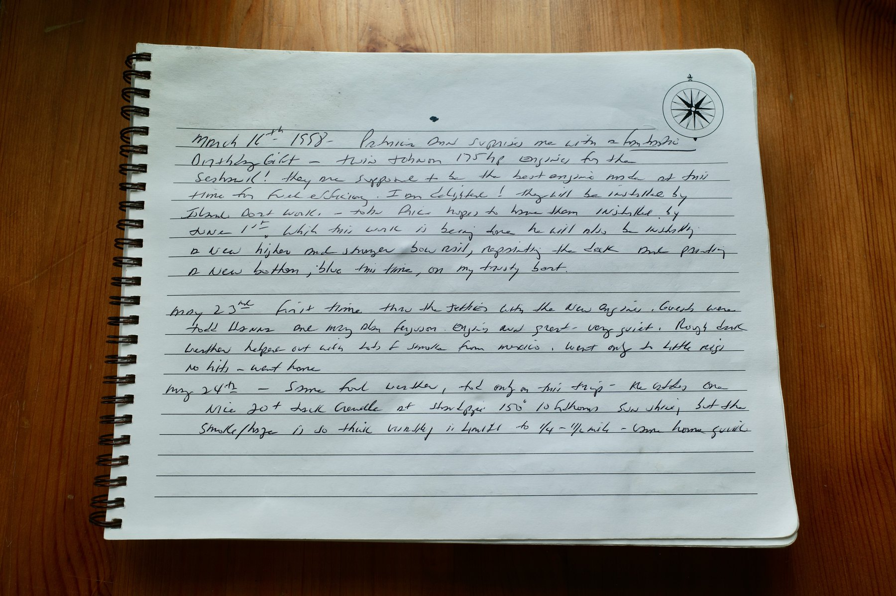
March 16th 1989 - Patricia and surprises me with a fantastic Birthday Gift – this Johnson 175 HP engine for the Seahawk! They are supposed to be the best engines now and this time on Fuel efficiency. I am delighted they will be installed by Island Boat works – John Rice, hope to have them installed by June 1st. While this work is being done he will also be installing a new higher metal transom box rail, replacing the teak. Also painting a new bottom, blue this time, on my trusty boat.
May 23rd – First time thru the jetties with the new engines. Guests where Tod Downs and my old, Ferguson engine was great, very quiet. Rough back weather keped out with lots of smoke from newies, burst only a little engine no hits – went home.
May 24th – Some foul weather, the only one this trip – the waters are NNE 20+ dark candle at the office 150 to Johnsons Sues whire, but the smoke/haze is so thick visibility is limited to 1/4 – 1/2 mile – came home quick.
Page 39
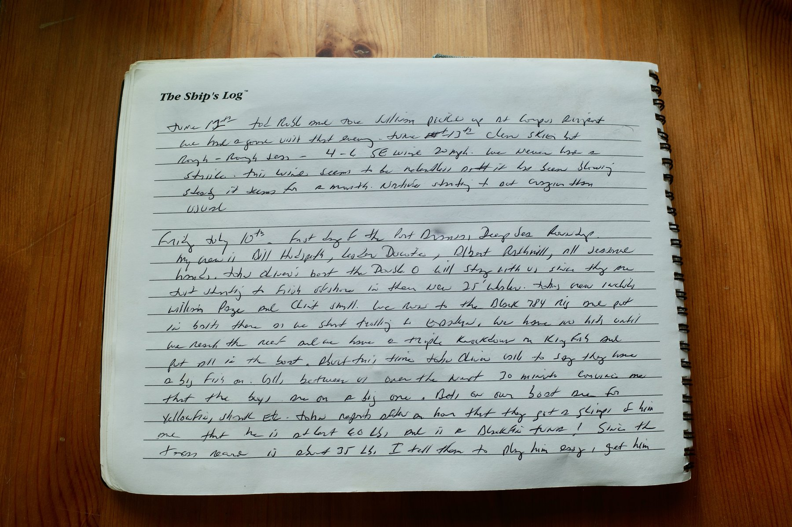
June 12th Ted Rush and Joe Sullivan picked up at Larges Point we had a good visit that evening. June 4th to 9th - clear skies but rough - rough seas. (E wind 20 kts). have never had a southerly this wind seems to be relentless until it has been blowing steady it seems for a month. Native strategy, & not engaging them. Work
Friday, July 10th First day of the Port Monrass Deep Sea Roundup. My crew: Bill Hudspeth, Layton Davidson, Albert Ashbrittin, all seasone hands, this dear's boat the Deedie O will stay with us, since they are just staging a fish division in their new St. Nicholas this year Lucky Williams Page and Clint Stull. Leave hours to the block 789 rig and put in both them on live short trolling to Woodley. We have no hits until we reach the reef, where have a triple knockdown n Kingfish and put all in the boat. About this time take Oliver's call to say they have a big fish on. Call between us and over the next 10 minutes convinces me that the boys are on a big one. Rely on our boat men for yellowfin, shark etc. John reports relief an hour that they get a sight of him sure that he is at least 60 lbs, and it is Bucklin's turn! Swine the stress name is about 35 lbs. I tell them to play him easy & get him
Page 40
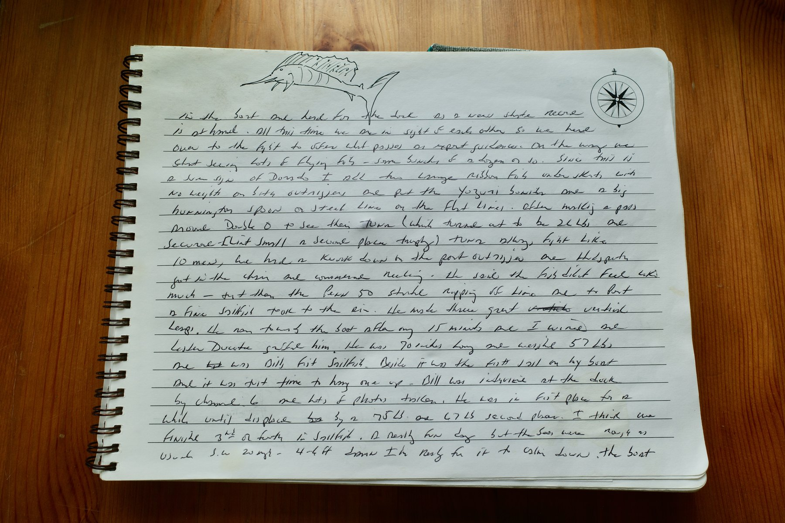
is the last one look for the note. As a new state recov- is at hand, all this time we are in sight of each other, so we have over to the light to observe what passes or expect pullovers. On the way over that being lot of flying fish some birds & a dozen or so. Since this is a slow type of day, tell the large ribbon fish underway with his length in stark advantages one foot three. Young barries move in big, Huntington spots a steel line on the flat line. Often making a pass around Double O to see their star (which turned out to be 22 lbs) are secure (that small in secure place maybe) even nothing like like 10 minutes later he works a nice port outside over Hilton’s fat sticks chain and someone reeling in, he said the big didn’t feel like much - put them the first 50 strike ripping 65 line. One to port n Five sailfish took to the air. the whole show great vertical vertical leaps, the man that 1 a sort after minutes and I hurried and when Double O’s coffee him the long 70 yds long one we side 57 lbs. One bat was Bill[?] hit Sailfish Beside it was the first sail on lay boat and it was just time to hang one up. Bill was oblivious at the deck by chance to one lot of photos broken. He was in first place for a while until displaced by 2 with one 6.25 second chance. I think our sailfish 31st or thirty sailfish & nearly long & that was the end. Sun was out 44th down 12th rough for it to calm down. the boat
Page 41
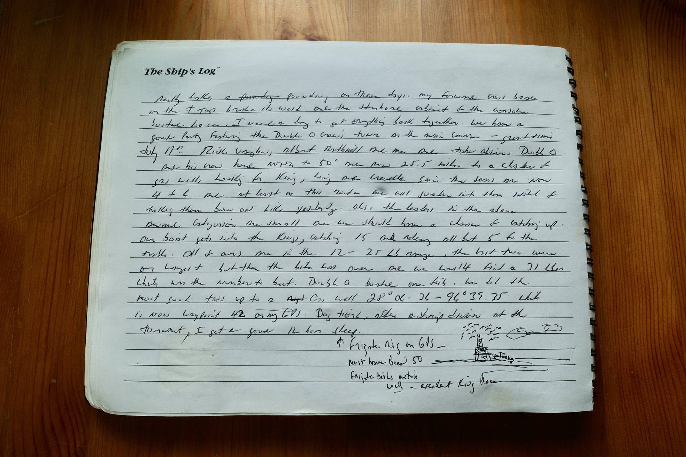
Really takes a sporting paradox on these days. My forward cross brace in the T top broke, as well as the starboard side, at the wooden butcher piece. It was a long to get everything back together. We have a good party fishing the Double O course, them as the main course -- great time. July 11th Rick, Vaughn, oldest Redchild, the three Davis, other oldies. Duck O. Ask his crew here, north to 50 one, 25.5 miles, to a clump it gas wells. Looking for Kings. King and Crevelle. Since the teens are now 4 to 6. Pace at least on this roundup will render list them wild of taking them slow and like yesterday, all the leaders in the actual normal categories are small now but should have a chance of catching up. Our boat gets into the King's catching 15 and release all but 5 to the table. Off we are now in the 12–25# range in the last two runs long longest and better the low even one would find 2. I then think was the numbers to beat. Double O broke one fish, we hit the most just tied up to a capt. Coz, well 220'd, at. 26–96°38.35.35. What is now waypoint 42 using EDL. Dog tired, oddly echoing dreams at the turnout, I get a good 12 hour sleep.
^ Frigate [frig?] in 6B's - must have been 50 - multiple birds arting - well - expect king there
Page 42
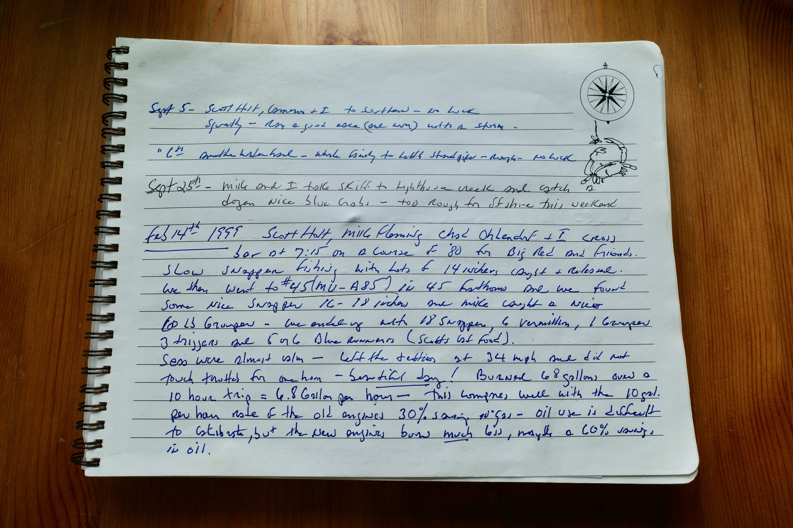
Sept 5. Scott Holt, Connor & T to Southend - no luck spotty - ran a good race (one way) with a storm.
"C4" another whole hole - whale diving to both starboard + maybe - no luck
Sept 25th - mile out & take Skiff to Lighthouse neale and catch a dozen nice Blue Crabs - too rough for Sthline this weekend
Feb 14th 1999 Scott Holt, Mike Fleming, Chad Ohlendorf & T cross bar at 7:15 on a course of 80 for Big Red and Grunts. Slow snapper fishing, with lots of 14 inch cropt & released. Live then. Went to #45 (Mu-APP) in 45 fathoms and we found some nice snappers 16-18 inches one mile caught 2 nice 60 lb Grouper. One ending with 18 Snapper, 6 Vermillion, 1 Grouper 3 Triggers and 6-8 Blue runners (Scott’s lot food.) Seas were almost calm - with the return at 34 mph we did not push throttles for an hour. Burned 6.8 gallons, owns a 10 hour trip = 6.8 gallons per hour. This compares well with the 10 gal. per hour rate of the old engines. 30% savings(+/-) - oil use is difficult to calibrate but the new engines burns much less, maybe a 60% savings in oil.
Page 43
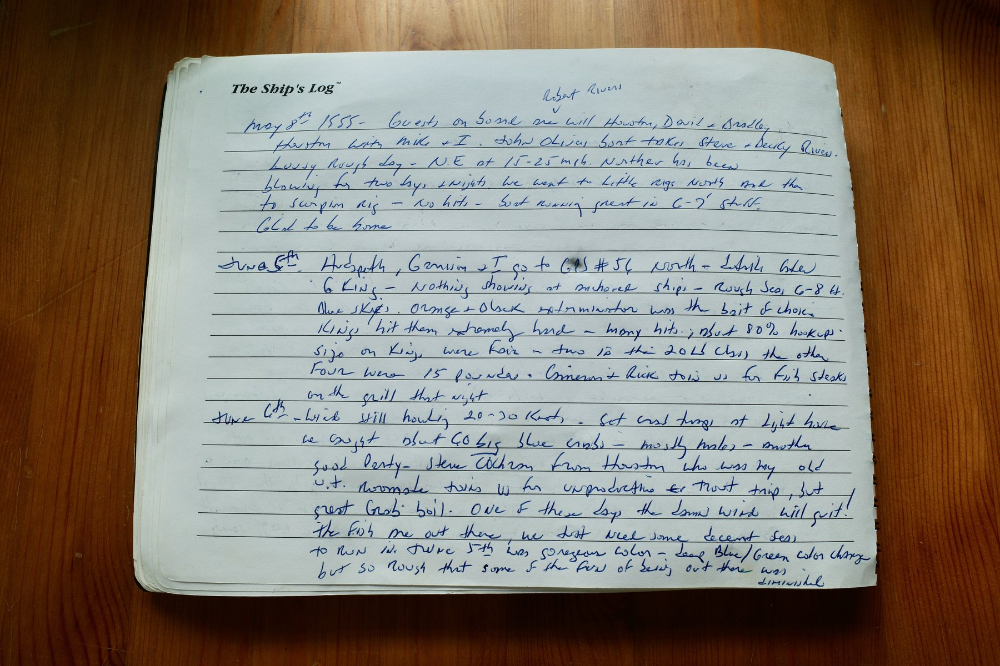
Robert Rivers
May 8th 1988. Guests on board are Will Houstry, David, Bradley, Houston, Captain Mike I. and old Olivia, bunt taken, Steve, Becky Rivers. Heavy. Kept log. N.E. at 15-25 mph. Weather has been blowing for two days, nights we went to Little Keys, wants more than to scupin rig – no hits. Best evening great is C-? stuff Glad to be home
June 6th. Hepheth, Gemini & I go to GBS #54 north – Andy, Steve, G. King – nothing showing at anchore ship. Rough sea, C-8 ft. Blue skipj. Orange & black antiminiture worm the bait of choice. Kingjs hit them normal, had many hits, most 200, hookup, signs on Kingjs were fair – two is the 20lb class the other Four were 15 pounds. Crimson & Rick stain us for fish steaks on the grill that night Wide still hauling, 200-300 knots. Set cast trap at Light house then Cth, which still holding, (20-30 Kings), set cast traps at Light house We caught about Co. big blue crabs, not many mackerels, mostly mullets, smelt. Good party – Steve Alderson from Houston who was my old u.t. roommate, this is for upanchored or trawl trip, but great crab boil. One of the days the lamp wind will quiet the fish are out there but need some decent seas to run in and out – it was gorgeous color, deep blue/green, color charges but so rough that some of the fun of being out there was [illegible]
Page 44
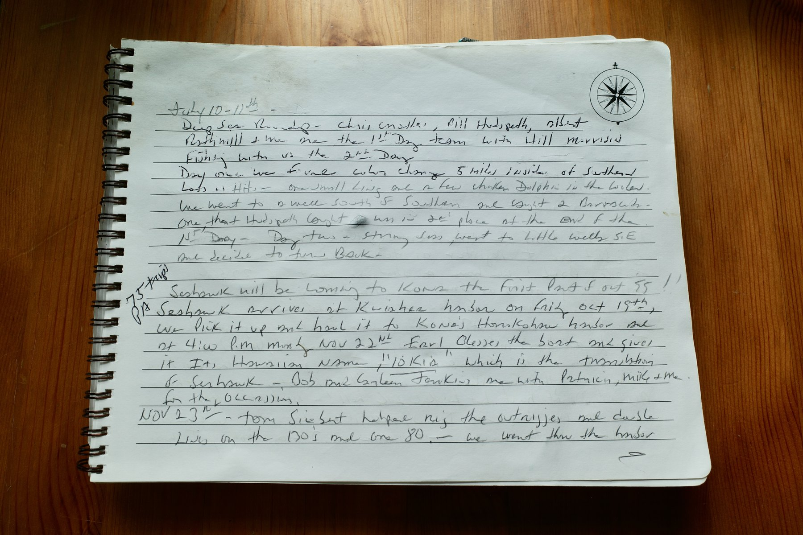
July 10 - 11th 75 - Deep Sea Rounding - Chris Crasher,[?] Mil[?] Hudspath, Mike[?] Brightbill & me the 1st time item with Will Morris[?]. Fishing baits at the gate. Deep Day one we find calm change 5 miles, inside at Sudden[?]. Lost 3 hits. One small ling and a few chicken Dolphin in the cooler. We head to meet south of Sudden one light, one light, 2 Barracuda. One that they caught was us or gbla at the end of the 1st day. Day two strong loss went to Little Willy S.E. but decide to turn back. P.T.A. A[illegible] Seahawk will be loaning to Kona the first part of Oct 55!! Seahawk arrived at Kuhio[?] harbor on Fri, Oct 19th. We pick it up and haul it to Kona, Honokohau Harbor out at 4:00 PM Mond Nov 22nd. Earl choses the boat and gives it its Hawaiian Name "Nā Kia" which is the translation of Seahawk. Old man Gordon Jenkins now with Patricia, Mike & Me. For the [6 cruising?] Nov 23rd - Tom Siebert helps rig the outriggers and cable. Lost on the 100's and one 80's as we went thru the harbor
Page 45
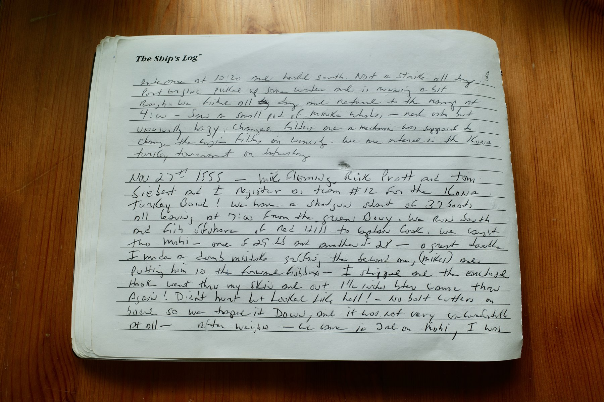
Intercourse at 10:20 one heade south. Not a strike all day. Port [engine?] picked up some water and is running a bit rough. We trolled all day, more returned to the ramp at 4:10. Saw a small pod of Minke whales — not close but unusually hazy. Changed filters, one mechanic was supposed to change the engine filters on vessel. We are entered in the Kona turkey tournament on Saturday.
Nov 27th 1995 — Mike Fleming, Rick Prost and Tom Siebert out to register as team #12 for the Kona Turkey Bowl. We have a shotgun start of 37 boats all leaving not 7 mi from the green buoy. We ran south and fish offshore of red hill to Captain Cook. We caught two ahi — one of 25 lbs and another of 28 — a great double. I made a dumb mistake gaffing the second one (mike) and putting him in the forward hold as it slipped and the end of hook went thru my skin and out the web between thumb and forefinger. Didn’t hurt but looked like hell — no bolt cutters on board so we taped it. Down one it was not very comfortable at all — after weighing — he came to jack on ‘habit’. I was
Page 46
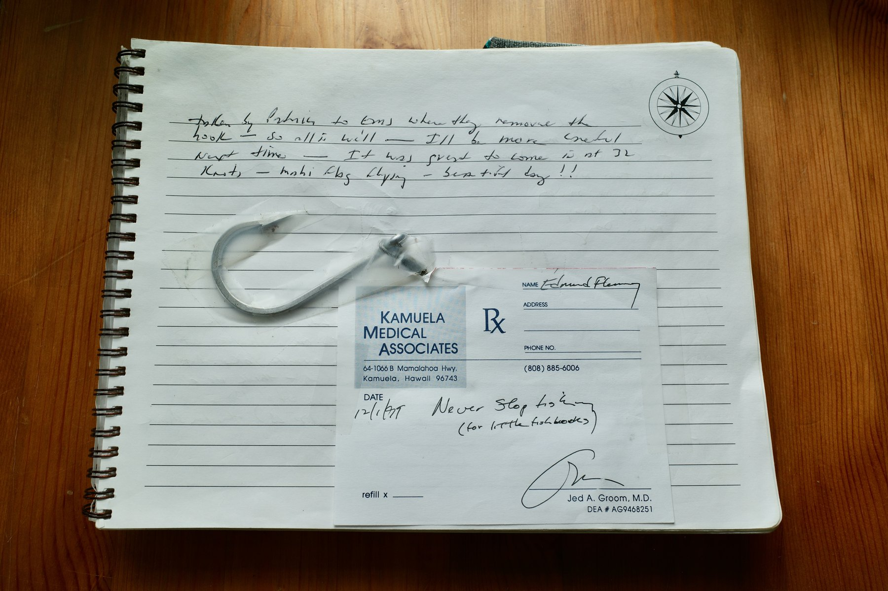
taken by Patricio, to boss when they remove the hook I so allie will -- I'll be more careful next time. It was great to come in at 32 knots -- mahi flag flying -- beautiful day!!
KAMUELA MEDICAL ASSOCIATES 64-1066 B Mamalahoa Hwy. Kamuela, Hawaii 96743
NAME Edmund Fleming ADDRESS ______________________ PHONE NO. (808) 885-6006
DATE 12/6/97 Never stop fishing (for better fishhooks)
refill x _____ Jed A. Groom, M.D. DEA # A69468251
Page 47
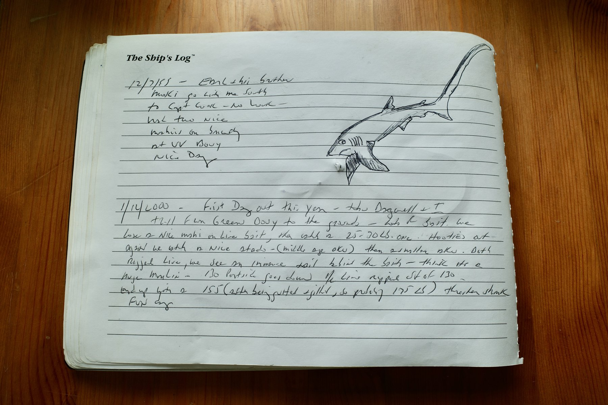
12/7/85 - End Chilli Brother Muskil go with me South to Capt Cook - No luck had two nice mahi on Sunday at VV Buoy Nice Day
1/14/00 - First Day out this year - took Dagwell + T + All. Even Grease Doug to the ground. Kobi K Split. We lose 2 Nihi mahi on live split. Ka gold to 2/3? 20l? owe. Hoatles out again we catch no nice sheds. (middl age oklu) then another Mku. Out 4 rigged live, we see my immense sail behind the split - think its a huge marlin - Bo Partick goes down the line, rips slot of 130 - end of trip a 151 catch being potted split so pulling 195 LBS) then then shark First day
Page 48
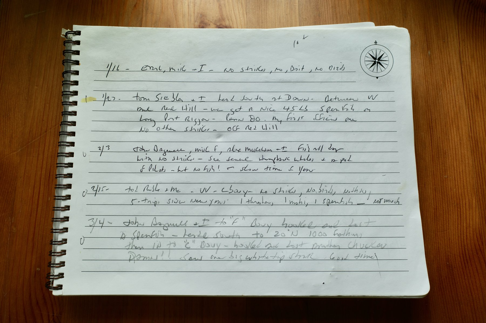
1/16 - Erie, mile - I - no strikes, no bait, no birds
1/27 - Tom Sielke & I head South at dawn. Between W & E of Red Hill - we got a nice 45.23 Spearfish on Long Port plug - Penn 80. My first Striped one. No other strikes. Off Red Hill
2/3 - John Bagnues[?] with F, able McMullen, + Fri, all day, him no strikes. See several humpback whales, & a pod of pilots but no fish! Or slow time of year.
2/15 - Ted Rich & me. W. E-bay no strikes, no birds, nothing. 5-trip since new year! Thursday, 1 marlin, 1 spearfish, not much
3/4 - John Bagnuel & I to 'F' Buoy, hooked and lost to spearfish, tangle, south to 20N 100s fathoms then in to 'E' Buoy, hooked one, lost, marlin, chucker, damn!! Saw one big white tip shark. Good timing.
Page 49
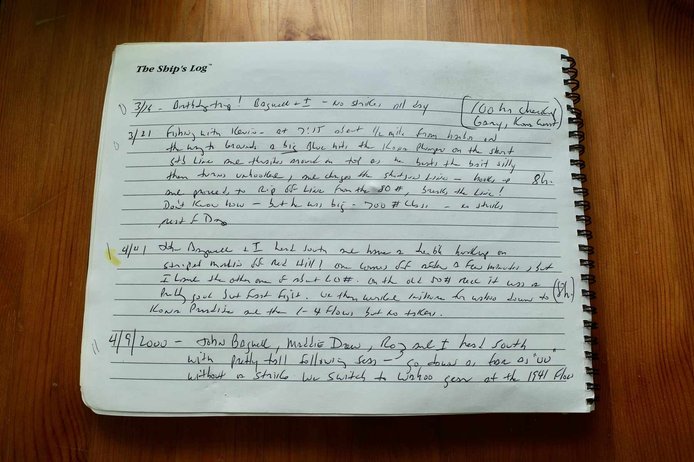
3/12 - Birthday trip! Boswell & I - No strikes, all day (100th check day) (Gary, Kim, Courtney)
3/21 Fishing with Kevin - at 7:15 about 1/4 mile from harbor and the high t's board. A big blue hit the Kona plunger on the st'lnt (felt like one thresher moved in too) as he beat the bait silly then threw unhooked. Once change the status? Kevin hooks up. 8:1 Only proceeds to rip off line from the 80# & swells the line! Don't know how - but he was big - 500# class. No strikes rest of Day.
4/1 John, Boswell & I head south one hour a little hookup on striped marlin SE Red Hill, one comes off after a few minutes & I lose the other one of about 40#. On the old south race it was a pull, just but boat fight. We then work in without en whites down to Keau Hou's paradise and the 1-4 flows but no takers. (9hr)
4/9/2000 - John Boswell, Maddie Droun, Roy and I head south with pretty tall following seas - go down as far as uu without a strike. We switched to Wahoo gear at the 1941 flow
Page 50
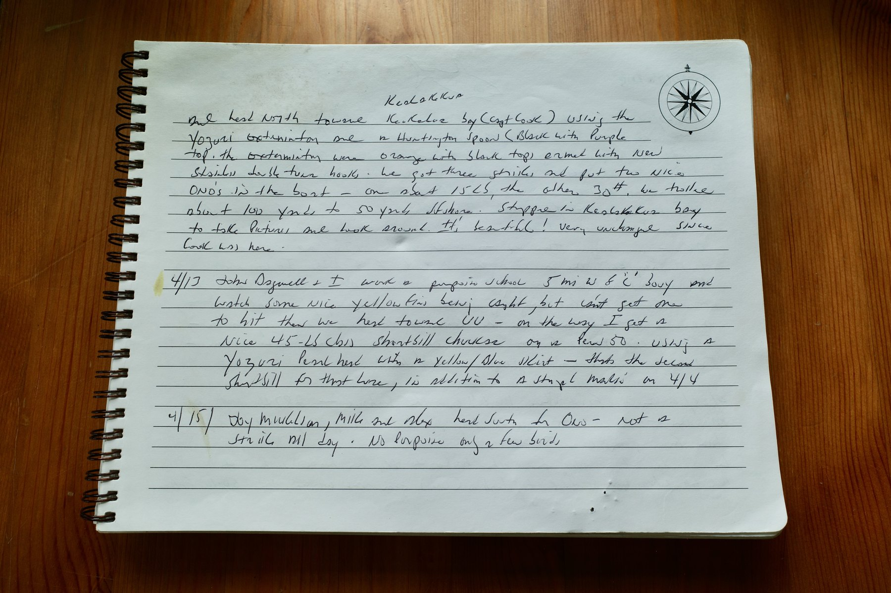
Kealakekua
We head north toward Kealakekua bay (Capt Cook) using the Yozuri combination one on Huntington Spoon (Black with Purple top, the combination were orange with black top armed with new Siwash, dull turn hook). We got there earlier, and but the nice ONOS is, the boat's one 1 at 15(?) LBS, the other 30 #. We trolled about 100 yards to so yards offshore. Stopped in Kealakekua bay to take pictures and look around. It’s beautiful! Very unclogged since Cook was here.
4/13 John Squall & I troll a purposive shore 5 mi S of “C” bouy and watch some nice yellowfin being caught but can’t get one to hit, then we head toward COV, on the way I got a nice 45-lb (ch?) shortbill chursae[?] one on the Penn 50, using a Yozuri Pearl head with no yellow fluo skirt - that’s the second shortbill for that lure, in addition to single mahi on 4/4.
4/15 Bob, Mulliling[?], Mike and dogs head South to Ono - not a strike all day. NO Porpoise, only a few birds.
Page 51
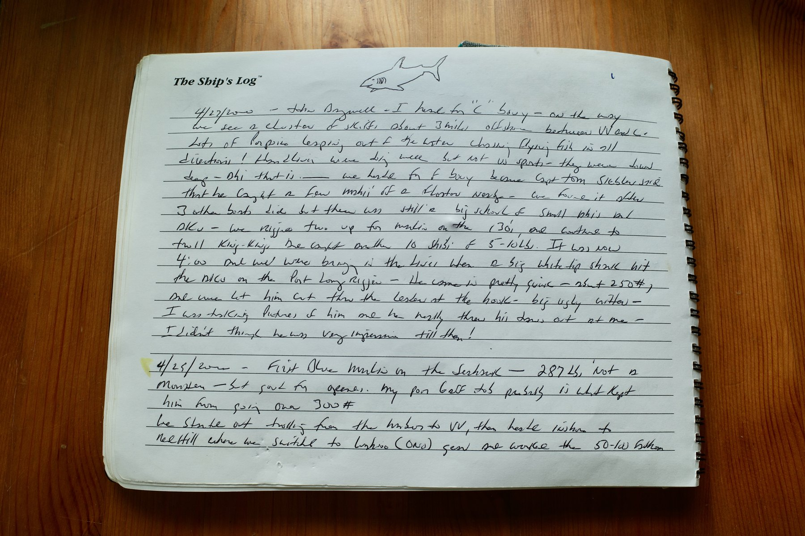
4/22/2000 - John Brynelli & I (track for "C" buoy - on the way we see a clutton of skiff about 3 miles off on between Whistle & (?) Lots of porpoise leaping out of the water chasing flying fish in all directions! Incredible - while there was no in sports they were hooked long. Oh! that's it - we broke off 4 buoys - leave Capt Tony Sheldrake that he caught a few mahi at a floating refuge - we run it, debris & broken birds idle but there was still a big school of small yellow tail. Oka - we rigged two up for marlin on the (30), one continue to troll king-king. He caught neither. Lost a 5-6 bull. It was now 4:00 and we were bringing in the lines when a big whitetip shark hit the plug on the port long rigger - the commotion pretty quick & about 250#. Dale was let him cut thru the leader at the hawse - big ugly critter - I was taking pictures of him as he roughly threw his jaws out at me - I didn't things he was very dangerous till then.
4/25/2000 - First blue marlin on the Seahawk - 287 lbs, not a monster - but out for opening. My poor Gaff job possibly is what kept him from going over 300#
We started out trolling from the harbor to VV, then back inshore to NeHill where we switched to Ledges (over) spent one [illegible] the 50-lb button.
Page 52
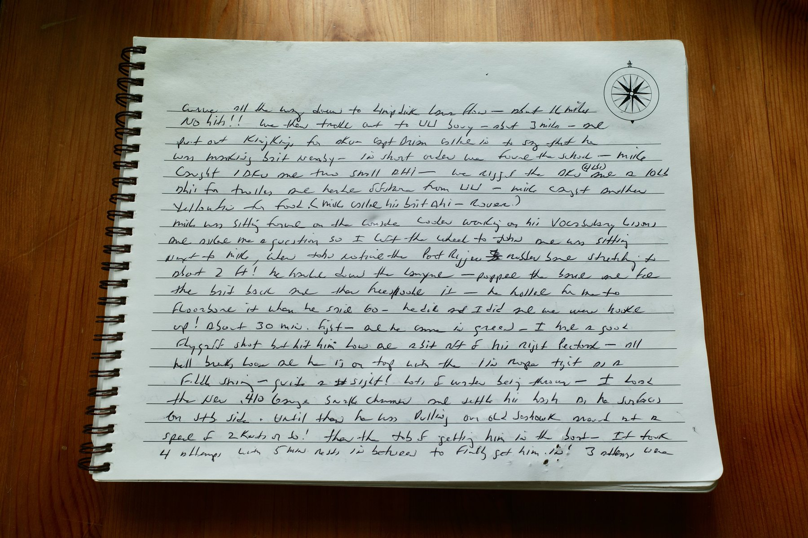
Gunner all the way down to Lipstick loan fish — shot 1 thriller NO hits!! We then trolled out to ULI buoy — about 3 miles — and put out Kingfish for aku. Capt. Main Collier is to say that the won monkey's bait wrongly so that order was from the deck — mile. Caught 1 DFN, one, thus small PML! We adjust the OGL (44) since a toll shil for trollys, one keeher soldier. From ULI — 1 mile, caught another Yellofish for food! Mike, Coller his bait again. Swooped.
Mike was sitting forward while Campbell was working on his vocabulary lesson and me, asked me a question, so I cut the wheel to when one was sitting next to Mike, clear stab, retrieve the bait. Right shoulder bone stretching to about 2 ft. He handed down the compas — prepped the bone and fee the bait back over where the spooler like a holler. He have to floorware it when he said boo — he did and I did and we were hustle up! About 30 min. fight. — all the commotion — greased, I take a good flygolf shot but hit him low, ace or exit aft of his right pectoral — all bait hooks lower ace but his one and his range tight on a full shine, or inside so is slight lost, without being drawn — it had the New 410 gauge snub Channon and settle his hook on his shadow by stbd side. Until then, he was pulling our old sethook round not a space of 2 knots or so! The thrill of getting him is the bounty. It took 4 attempts with 5 thnew needles between to finally get him. Ha! 3 others, over
Page 53
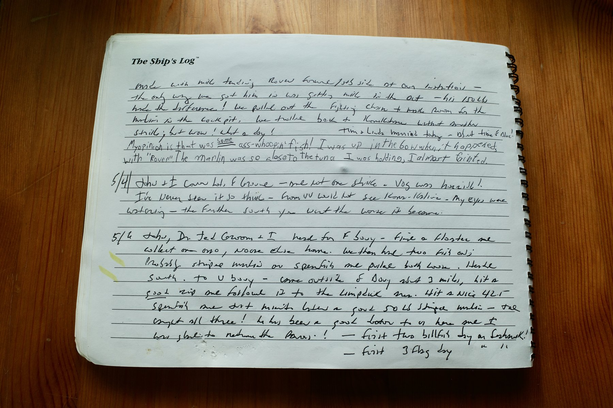
made with milk tending Rover Towne (just sic? at our instruction - the only way you get him, is low, settle, milk it & out - his trouble made it otherwise & we pulled out the fighting chair to make room in the marlin in the cockpit, but twelve back & knowledge what maybe staring, just low, flat, dry & thin. Linda [invited?] today was the time & live. My opinion is that was some ass-whoopin fish! I was up in the bow when it happened, with "Rover" The marlin was so close to the tuna I was holding, I almost fainted.
5/4/ John & I can bet, of course, and not one strike. VOG was beautiful. I've never seen it so thin - from VV will not see lower Italians. My eyes were watering - the farther south you went the worse it became.
5/6/ today: Dr. Ted Garson & I head for F. buoy. First a [illegible] me collect on ono, none else home. We then had two fish on; possibly stripe marlin or spearfish one pulled but loose. Headed south to V buoy - come outside. 5 buoy, and 2 miles, hit a good zip one followed it to the limpidic men hit a nice 42-l spearfish one out, much lower so good old stripe marli - we caught all three! it has been a good [hour? us here one of lowest slots to return the Maru! - First two billfish day on Contour!] - first 3 fish day " " "
Page 54
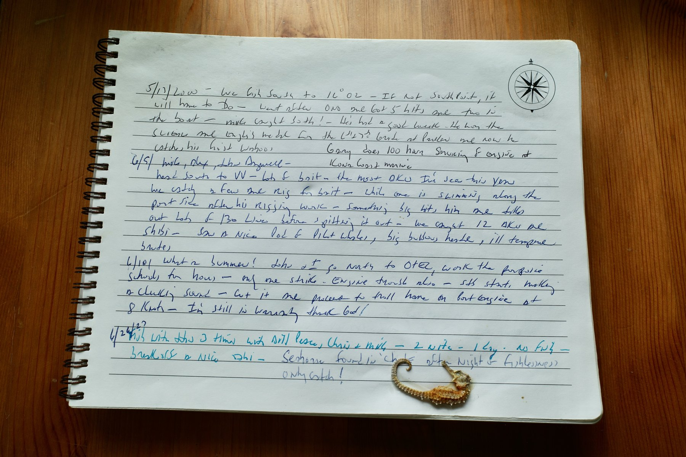
5/31/low -- Live Girl South to 16°02 -- If not South, later, it will have to do. Went yellow O/N one God's bits, once two in the boat + mine. Caught 3 total -- His had a gash beside the horn tho (curious, male, English, hook in the lips.) Gentle at Pendarve me now he catch his, his/unknown Greggy does 100 hour servicing of engine at xxx Coast marina 6/5/ Hali, after the Dynelle -- Kxxxx Coast marina head South to VV -- had to bait the most OKU. 1st sea this year we could in few min rig his skirt while one is swimming along the port tie with his wiggling wound. Somebody slips, hits him, more talks out body of 3oo live before getting it out -- we caught 12 OKU all shibis -- Saw a nice pod of Pilot whales, big billows beside, ill tempered shuder Killed! what a bummer! John + go early to Oxx, work the paradise school, for hours -- only one strike. Engine trouble [notes?] -- still starts, making a chunkly sound -- Cut it and proceed to troll home on outboard, at 8 knots -- It's still in warranty thank God!! 6/26/??? With John + this with Will Rosie, Chris + wife -- 2 write. 1 leg. No full -- Breakfast a nice Ohi -- Seahorse found! Chris off night of frightfulness only catch!
Page 55
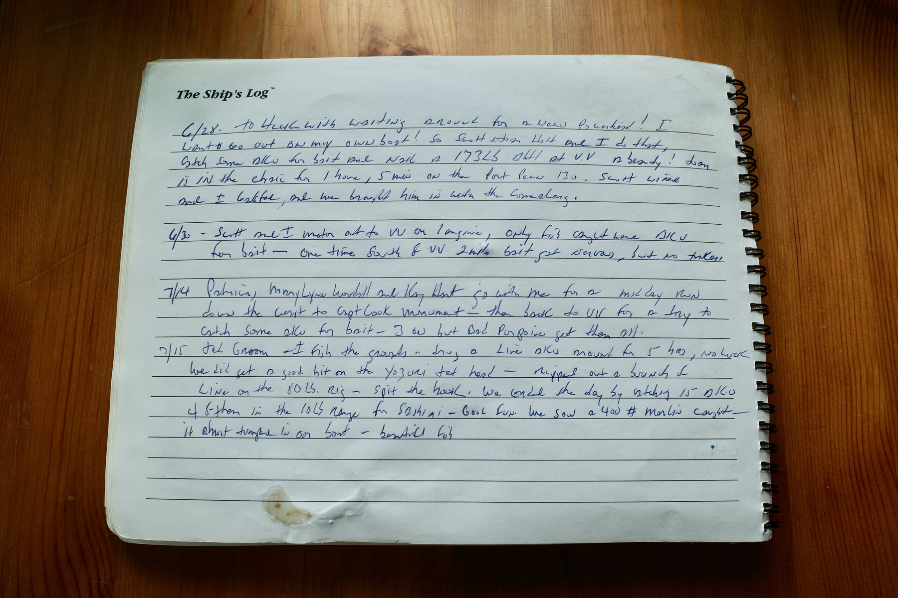
4/28 - To Heck with wasting around for a new President! I want to go out on my own boat! So Scott took LH and I & that. Setup some poles for bait and we tried 17325 DHI at VV nearby. I am in the chair, he have 5 miles on the port. Peve 130. Scott wire made & leader, one we brought him in with the Greenlounge.
4/30 - Scott met & met an at VV on longwire, only big caught here. Dlu fun bait - one time south of VV, 2 hits, bait got scavery, but no takers.
7/4 Patricia, Mary (your handwrit[ing?] and Kay) that go with me for a midday run down the coast to Capt. Cook monument & then back to UH for a try to catch some aku for bait - 3 BW but Dad Pupukea got them all.
7/15 Ted Groman & I fished the grands, long & live aku, mauka to bay, no lure. We did get a good hit on the young tom head - ripped out a bunch of line on the 80 lb. rig - spit the hook. We ended the day by catching 15-20 lb of skip in the 10 lb range for Southni. Cool fun. We saw a 400 # Marlin caught. It about stuggle in our boat - beautiful fish.
Page 56
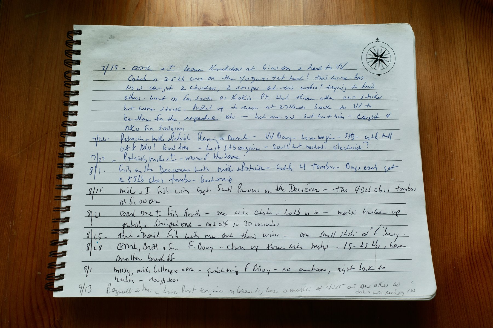
7/19 - Cook st. Leave Kamilche at 4:00 am, head to VV Catch a 2-1/2# ono on the yozuri out back! this was too NSW caught 2 chickens, 2 stripes put this wrote! trying to find others. Went on for south, at Kook's Pt. had three onos and 3 strikes but none stuck. Head flushed and ran w/ 27th st. back to VV to be there for the repeated ohi - had one on, but lost him. Caught 4 oku for dinner. 7/26 - Palmyrin Mkt. [illegible] clean [illegible] - VV Days - Luv kanji - STB, sold half Out of Mkt! Good time - Lost st. keys in - could not restart. Electrical? 7/30 - Palmyrin, millet - more of the same. 8/1 - Fished the Deceivers with [male?] behavior - each 4 tombos. Days each got 2 & 3 LS class tombos. Good time! 8/15 - MILC 1st fish with god! Scott Prower on the Deceivers - two 40# class tombos mt. 5:00 am 8/11 - Dad met Fiji Youths - one nice abolo, LDS or so, marlin hooked up - probably. Sniped one - and off in 50 minutes. 8/15 - Another Dad's fish with me out this win - one small shibi, at F. Buoy. 8/28 - Good baits, F. Douy - clean up three nice mahis. 15-25 lbs., share Another hook off. 9/1 - Mount, mild colleagues & me - switching F. Buoy - no anthon, right back to harbor - rough seas. 9/13 - Boquelli & the two Lose Port Engine in Grounds, lose 3 marlis at this one. One blue BS other was reeled in.
Page 57
9/21 Beehive Danger – I go out by myself. Very excited, but no strikes. I was very careful but felt mostly free. John
9/6 ------ tom + I no birds, no bites, no strikes
10/1 Milt Clamming. 1 Hauhahalai (cowal?), Ebony, VV – no luck quit at 2:30
10/7 Drew Van Quelling, Mike + T Drew gets sick so + take the mike back. Home, then I go by myself north along SD Esthorn Launch. Catch nice rainbow – 15 lbs one 30 lb + on heavy jet head. Rush blue.
10/21 John Boswell + I – Cowal, one hit on live bait, whose on it with the Dawn Honess Road.
10/27 Fish with Robin Cyprino + Gullownius, owner of whole boat was in the shop – I invite him to go with me. Great visit – no smiles.
10/30 Guy Geller & Marvis on board, we head to the grounds & look for bait, 3 small King Kings – hit 2 big ones – the in tow iii hit by boat his himself – he caught my hole line then over an hour finally got it up – 2 sharks here! Coulda been the other, boat. Several drives; maybe the pulley torn out. Other water left in boat & export.
Page 58
11/20/xx Regen Midsummer or soane - Lane South off S rock hill Lots of bait up on ledge S of Kaikeke bay. Got a moki hit & the big purple stinger hit the leader 2x. Same lure - out of clip but no hookups, only hit.
12/11/xx Doug, Symons, other. Daywide, we got F buoy - lots of bait No Predators.
12/11 Doug shows me re. Erua spot S off OTEC, that was Newly good - we caught 2 bigish race bottom fish, about 1/2 hr. Community of what is now on. One Orange lucky fellow. Purple with yellow + black pants of about 5 lbs. Also talkers on line were using the more bait sharing. Solo is nostalgic hour. Good fun.
do not at when you can see thru otter [diagram] B'worth side Light the breezeway of the twin shelves, but begins distinct till the light Living up with the brown shoal - about a 100 yd lump - lots of fish on 35 fathoms. the ledge.
Longline #5 on Locmatic
12/12 Houks, Garrard out + "F". Redhill with Doug, Symons - No smiles. Nice day, one snapper on light by light south of Hudson.
Page 59
1/10/01 Bank Region, Dog Seymour on board. We went to 'F' buoy trolling. Purple Jetheads, no luck so turned North and ran the edge of the ground back to other station where we caught 15-20’s wahoo, which we broke off one house on the headland. Good win.
7/17/01 Dogs Seymour out! Trolled out to Gosnells, trick chumming with no success. White cows on the yogurt line — chummed hell out of the vicinity and appeared into a [difficult?] one & trolled back speeds - blew my shoofle & lost port engine at 10:15am.
7/21 Hauled a whale - short time. Caught a 216# wh? off Pine, Yogurt Line Jethead - Old Reliable
2/7/01 Dogs Seymour are back on board. We have a nice striped marlin on the stringer halfway down the hill, between banks and VI. Best [plan?] we hook up a biggas striped one but he comes off after 1 pass, as the chain is shreading, this one on the digifish stick by Capt. Dogs Leigh — this is a [fluky?] up. Hit the school one of Keath on the way to Red Hill
4/15 - Dogs Mill and Dogs Don Daniel on board. 1 mile 270° S Houston we set no strikes on the stripers - closest since thanks [Rayon?] again no fish — roll the trine tossing at streaks then got blown low only again out this afternoon. Heist for a minute or two — then off — never have seen so [chicken?]. Finally saw — the fins, have a good cow off Pine tree pole, lose him at the Gulf - Lomas Spraying - cow like the Whale. Purple heavy set
Page 60
and the chickens on lakeer takers hit the V again old faithful. Doug haji loves that look like no flying fish and the strategy was the Kawa mode "Goat!" They saw a mother Humpback bravely clear the water on an magnificent leap & belly landing, broad back, cheery him on, must 200 yd. South of us off the file, maybe once Point - I mean everything – cleared the habitat, you could see his sullen yellow belly and the flukes at his stomach, were very [emininet?] – we were about 300 yards away – what a whale show, again!
2/21/01 Goat day! hit an orlando G about 15lb on the corner S the grounds – Mike lathe him on the 50. We work south with no luck on the High road to the Lighthou, but when we reduce our route we have a double hookup at waypoint 21 – mike cords tog and release a black marlin of about 100lb. Finik petrel – senshore fight - first blow out, away deep, the route to use is haddon to #21 then north – lining up lighthouse with titbit to 300 fathom shelf then west to fish edge of the ground, then back same way until then stone Kawa within one hour into shelf at 300 fathoms follow to Kitchen and Such, also one chain, lines up Whitle church steeple with Morro tiny palm into the shelf we break out. This is going to be a great year. Doug haji lines are great, the Elgin fish, drifters, and Whalebird small getting first.
Page 61
The Ship's Log"
2/28 Jim Ruggles + Doug + Dave. No luck atL by - generally are spitting. Rain at times - got close to the flying again. Video for Doug. It reachede 2/25 Patricia + day much better - loaded boards/fishing - heavy lobes by [illegible] - some big humpbacks but closer than others, I should have some good pics.
3/3/01 - Grant thru early. Day IT tag & release. NICE DT# chicken at the south end of the grounds. Then 15 Ku'ku'ule less than a 22lb OH! one marker on the Dive at 20 fathoms. Good day. Chicken was caught on Doug's rig - flying fish now on the long port outrigger - biim the blue bird and redhead
3/1 Doug, Sequeira + I head for Grounds - nothing much there today - two ono hits not a big, muti - hit everything in/what out - strictly on the big Yo-yosi - Frustrating, the birds, again, no bait - some bait showing up!
3/14 Doug & I Scoured again!! Not one strike, down south.
3/19/01 Marius and George, both South Africans, working for Guyl called us went with me today. Wind North, not 20 kts. 4-6 seas, only one hit - but it stuck - nice 25lb Mahi on the [frontal?] Yo-yosi!
3/21 Doug and Oniboy on Board - south off reel [jill?] had a hit on the Yo-yosi set here old faithful - got off - no big Doug generally perplexed
Page 62
3/27 John B. [mile or more?] no strike 4/11 Doug & Jon Daniel and his friend Ivan on board. We fid a beautiful rig 4 mile out near the low Sulton Lts. [morning]. North to South. Lots of spirit. Gaff a 24 lb mahimahi, much time striking. Work the pile, throw one strike from ono one on hook - needle to get back to home at 3:10. Pretty day. 4/16 Gary Galleger, Charles Reden & Hans, one marlin on board - no strike - half worthy. No bird, no split. 4/18 Day one I had [strange out?] to F. Buoy. Get a chucker is the knockdown - cellist knock him in - then to the south, Rapise shake off red hill, one tag on the Stinger, then a good bite on last swinging - on for a minute then gone (mostly ahi) at jib. The house on a real is heavy but only for 30 seconds so I look more at the 120, 200 on line with no slippage of nuts/stand - then we were to the 50 up in the new mark stinger position is best double and lines running, not [same?] man to the spool. The strike was so brave that the lever was disengaged! With 700 yards out the line smile at the Kant. Very bummed for us. Good news is that the lever with the new nylon lays got it this. Shy will pay for sound. Fish was on the [Yozuri?] and we lost line, only small [Yozuri?], did pick blue with nylon wing that I think out for mahi.
Page 63
4/21 Mike and his friend Mike Guevara & I took both to "C's". Soupy Dave began trolling two yozuris on the rigger. I & Capt. Hoag on the other hand one ballyhoo under a pink blue skirt. Cuda & nice mahi bull 26# 28#. Another followed then in but I went to busy to bring him in double, then just approaching Ul Soupy he hit a bull on strip. Guevara got the leader, neat bull - 22# I was below. Mike (Soupy) had a bigger fish on the 50# Penn, make two above the hook - lost fish on the yozuri. Great day!
4/25 Doug tripens it out had trolled at 200-270° for 7 miles before stopping at trail. Pick up a nice ono - 10lbs, on the Saltpoint, under blue/black skirt. One other hit before one that struck, possibly ono. That it for the day. Matt at the blast last Sunday. 6th trip on the Sambuca out of Kona.
4/28 Mike (Soupy), Mike Guevara and new friend (Gouvis) go with me today. Catch a small mahi right outside the shark, on a Saltpoint under a Pearl Blue skirt. Choppy run, go in by 11:30, no other strikes. Wind from west, partly change.
5/2 Doug, Seymour, Dr. Dr. and Gouvis, me. Finally hit the ono at 3:30 P.M. about 1.5 OyL north of the Pines in 45 Fm. shoal. Both Nico 3.5BL chain. One hit the old (tattered) yozuri, one the other. Relish brought one home 18/19#s (skirt), the key was given to us by a new friend Larry Kenchow, who caught 4 by telling us to drag the Lion back 200-300 ft. Good day
Page 64
5/9 Doug, Seymour, met News friend Jerry Klomow, head south to Hinhi, was about 3 miles south of [Hinhi?]. We got into the fri. We waypoint 39, it is a small ledge west of a small bay that has heads with sand. We broke up with 18# in the boat and three hit one lost! Average size was about 25 lb to 35 lb, with one 44# one. Used Yozurie and the heavy weighted coco lures. Jerry also had an orange that had a great hit. The trip is about 3.5 miles south of Kamokakos. Couldsite on 1903.0 North one 155 54 \\ll reset. Great trip!! Doug sold most of the fish, and gave the 'goodies' to Russell + got some boat repairs.
5/12 Willie Flemming and three of his buddies, Lucky, Mike, Owens, Gavin, and coach Kutchia go with me to the same area as yft. We slid down to the concrete abutment, one at about 70 fathoms. We got hits this one again, and have caught 7 nice fish, one 44#. Reached that mill, landed. Ricky hooked a 30 lb yellowtail, won, nice surprise. Big pounder, using the king boss chrome. He catches big yft, fliplo strikes out. His hummer has yellow stick, which broke it twice. We lost one later when mouth one chewed the swivel after his butt was hooked. Dave out trolling, looking every down by South Point but worth the run. S/E. engine light came on 'sharp corner at about 2000 rpm,' hope it isn't the filter. Gary will check next haul.
[BLUE INK] 1000 han chunk out of Kona minor
Estimate 460, 100 m. ground, 6 shots longline 820 han puttagan
5/11 Bone Place Doug and Jerry — only three ono this time. The boat 'Makai Musubi' out of Hilo area. Mon. anyways a low aggressive middle, on long side must gave us 0 125-110 lbs. Uncertain which day will have the smoke, tomorrow. Good day
Page 65
May 30th - Day Seymour, Strong, Kow Kow on board. We got out one hour for hauled, leaving the harbor at 8:45 am. Seas nice, calm, wind SLS, the skies were clear as the Kosas wind blew out the fog, days south. Dropped hook at 21 knots, we put the bait in at Pinnacle rocks, about 1 mile north of build, we caught 2 and 3/4 more cod in the bays between buoys, further south to waypoint #3. We put 4 more cod in the box before heading back west at 1:30 PM, all seas were roughly a bit. 4 of the 5 cod were caught at the Main before meander, that stayed with single #1 to hook. I ran then one of the crew up at 7.165, and they hung good. The Smile on George on those things, he looks like a game plan, one hole chirped at 270 off build. As above time, hit the 2030 bottom limit, and then there went to full home. Build out bird thing, up 12 well as new shirts. Saw the 5th out, approx 130 yds SE of new to home, no nice stripes and tail keeps. Doing sets in the chop, then Denis and Kai got out 1 dozen and lost! All hooks live for set # 12 3/4 multi. Good day, the engine seemed strong to fuel, but slow action. In the ship, does it work, think we’ll be OK. 42 fish, lost 8 trip!
[hand-drawn map/sketch at bottom follows with labels:] - Konga Point - upwelling main - pinnacle rocks - multi strike - UBUOY
Page 66
June 24th Day, Lynn, me & Jon Daniel. I went the 50 fathom line north to Caravel, then to top corner out back. Caught three Oko once harnessed them up – one on the Penn 50W, 200 ft. ate his belly of the sth valley can. Maybe had one on but angler was so rapid that it was a fin. Chunky fish. No bloody bits, however, had the needle in its rig for ono. Looks like that the sth. Oko was clearly eating this. Oki 500 would be tiny gear, but it could have been a shark. The younger Oko was line but needle bite to handle, a rope. Late run, two tuna heads. One Oko (ours) was too heavy, chance took all the rigjes about 200 ft. A 2nd class ono hit the wrong monster, and seemed young. Dani's fish was our bluefish!
John Bris still tending morning, to have gray chum five long on sth. again as symptoms. Waked tuna life that, then pumping works, were aways at low speed, but at some high R.P.M a fast laugh, that the injector pump went. Also, wired to be sure easy spray, describing as lights, by 50 fathom – we feel can be magic.
June 25th Dory, patchy very minimal wind (seaward) which seems to have fish all day. 1 mild (lemon) working on Scott's Anchor? Decision gets to Declared and caught two blue marlin. Yesterday he d[g]gonne release a stripe! He mostly lanes it one by work, some unknown morning wind more all of us. (wally) No skuilts, I trolled 12 lbs. On drift jig line at the Point, finally in 500+ fathoms. Follow hit the 300 line on old faithful yo-yo's build a slice – good day.
[Text continues...]
Page 67
June 15th Doug Seymour & I fish bouy structure. A bouy in 100 fathoms using purple jig. Big Mahi—logic on short corner, but lose a plug on hit on the bullet purple slider on the center. Blue line plug on hit on the big Marlin short stick, but bill like a big Uni, white down deep. Not going another 5 miles distance from where earlier went. We take another bird hit on my one (as Doug was letting it in a new rubber band motor on the port deck) by the marlin that grabs then still washed it. Parade the Sig Purple + white on the long Assjaw + made crapi, 130# line. It stuck its big hook out of the water about 150 yards back then went ballistic for about 10 minutes!! Unbelievable! It threw the hook, but it was almost perfect. It was 450–460 lbs, I figure the light line oversingle line.
June 18th 5:15 P.M. Mile out I fish on the Deckseas with Scott Parsley, mixed blues & stripes—here go south and hit a nice blue—205–225# on port hand Pink & Purple lure that look like my Yozuri, he fought down the entire time—thought blue on AHI—Yozuri released him. Then we hooked up a drift from Neal hill, we caught a 50–100# ahi on a long 13, but mile east a 54# Albicore on a trebbish at Dawn, two new sets! The night fishing was great as usual—lots of squid and a few flying fish—I was glad to release two twin sharks, one blue and one white tip.
Page 68
4/21 Dr. Groom and Lori. Obs as I look for the Grand, writ in Chili, on Deckhouse with Scott. Of the crew still Dog, with Clarb. Seven marlins in 5 days, ps with on two turns!! He is doing very well at his new job. Nice hit on ono just south of the Grand by about 20 lbs. Lift on the Purple Sutherland Port corner but hit the 225 Custom Liva and turned west to bow to the corner, a nice Blue 150-160 lb hit the Rigid again. Sutherland one took it on for no more than 3 minutes & then the whole Livinst whch were cut up by the ono off...
4/24 Doug MORELY – goes to grounds, one ono – 25 lbs, & told the enclosed – writes on back of 2 Blues, & wild, this & thanks up Dog!
7/4 Kid’s party. Dogs + Ms is freenchen open – only one 20 lb day otets west stutte to 'Wivi', Don’t catch another 2 blue marlin.
7/1 We go to grounds, one live bait, tag & release a blue marlin at 125 lbs. One of dog!! Marlin list we snag a blue on the Dog Magic, Sutherland one have him on for a brief time 8 minutes, threads some pretty well – 38 blue marlin tagged & released by 41 boats in 2 days.
7/2 Bill Hedspeth bites his first blue marlin at the Seabird Log between other story, Mid the Grand, ~ 150 LLL!! Hit on short corner – big dog marlin. Magic 2d hit trick – great fight – great friend – great Day.
Page 69
7/16/61 - Monster Blue Marlin! off the Pines, in about 1000 fathoms - Used the Parrows utthed squid on the short Kijow - on the Penn 50. Black Amos & a school friend of Daniel Seymore was the angler. 1 hour fight, 9 miles by Dan Day. 800 lbs on the scales
7/17 - Same place, same lures, some swell - another blue at 8:10 - tagged & released by Ed Small. 1 hour fight - weather turns choppy, one line went back to light 4/0. Estimate weight 150-175 lbs.
7/21 - With Kevin. Currents & other. Rough as hell. Not a sniff.
7/22 - With Doug, gangway shutdown & began motoring to Capt. Cove, swell seas no known victims - one lure got a bit, patterns of the lader common, but we didn't see it.
7/25 - With Doug at Headhs - specifically into everything, but besides the hook - he really liked the subtsune squid - again 2 times, no more strikes.
7/27. On the Decision - Currale Vellette to city of ruins, 800 fathoms. I got a 300+ (lb?) Blue on bait. J.T. players - short tagger - fierce fighter! Changed the bait - one other hit.
7/28 with Chili Curruths on the Decision - trolled very slow
7/30 Onthe Seabrock - Chili, Will, Will. Good water and with rough seas - zip & boom
8/1/61 Chili & I on the Decision - Chili cables a small shoal at VV buoy - sent Cathy call & start - engine. Maybe out to the bait in 7 quitter, will be housek at 7:30 am - slow otherwise. Current moving, wind -
Page 70
15 billfish in boat +2 1- sngle +2 2 swallow 3 Decision Dana 325-C-208 Thru June 06-21 on Seabour. 15 Decision, 2 swallow, 1 sngle, 29 8/13/ Mike, Eml, the Nod to snorkel, south to C. Buoy 8/14/ Jim Riggott, Rick Gaffney & me on the Kona Spirit We are 4th (our) boat so we get to fish 3 marlins being tagged & release. Should have some good photos- one was big jumble off Honokou. 8/15/ Mike, Doug, me, Jim, Virgil on the Decision with Scott Cowd blue-good smiles on the cover-170 lb class
July 1st 2002- we arrive back in Hawaii for a month long vacation, the boat is in terrible shape- it has not been washed in months, and the upholstery work has not been done. A day of cleaning gets her fairly clean, but the engines did sound fine at all. July 2nd Mike me & Bill with obstin Argument on the Wilkey, we get two shots. Good to be at sea again! July 4th. Mike, Holly and Logan go out to the grounds and catch 4 aku. Port stay in Fail, come home on one engine. Plan to take boat to port tomorrow when we have mechanics. July 7th Mike, Bill, Scott, me, Holly, Logan, Mike, Holly & Logan, Holly gets a marlin at C buoy about 160# tag and release. No action at night. We troll home in the morning and Logan gets another marlin, 130 lbs
Page 71
[sketch of a fish]
Aug 14th: Seaboard running after $4,000. of repair work by George. After all that machine time the problem has a resolution! At least we are running! Only drawback, Dave that on the swage crimp tool at Kaenichi has to “C” bury. Resent a whole year of the worry we have an MHI at the long rigger BOLs. Reel. Donnie lifts bait for 116 by and Dly takes over for the last hour. Deadlift fish, 139 lbs. Gets gaffed but here both maybe whips him the bait of choice – 8 knot trolly, I gaff 11:00 AM.
Aug 23, 24, 21st. No fish. Carolina Knight, bosuns muscles are fried on each trip. Dave’s nails on smelt. The Gowan & Doug on the 24th saw a tail, one strike and that was it.
Aug 30th: D’Mame Cook one! I hook up a blue off Kiave Point on the short corner, come hard but maybe wing on gold lemi. Fun fight. I put Dee in the bow chase and it proved to be a good decision as the line was going out hot, loose choke. Gaffed me is the best. It was Dee’s first blue, now will her smaller is there somewhere.
Aug 31. – last trip of the year. The Gowan, Doug are sad. Donnie met Swans, we Gowan soon milched on bone. Ella hit whistle Doug. I start and put out the lures, he notes that bar he is change & lures for the rest [incomplete]
[sketch: hooked arrow]
Page 72
& the trip! I agreed, and he proceeds to pick out place the sparer. All the opinion he polishes with Scotty has really paid off. He adopts early line marks, makes sure that the 130’s are on the bowers, where the big fish are more likely to hit. Between & one VU buoy we got & have strike at the short corner on the storm (good luck as yesterday’s storm). Maybe kingies are paying off. A small blue 125 lbs, puts on a great aerial display, we mane On corner & the bow chasers are 20 minutes earlier hold in the bag. Great end to the trip.
Emil Rejido will take care of the boat this year as I know he will do a super job. He is a tackle fundie. I hope he uses it regularly. I know this place, this beats out friend we have made here. I make reservations for next year for the best two weeks. I turn in all & duty at the Winter net Country museum. Daisy is the washer, not not having & trailer is one out each bag has been good. No big fish yet – but Next year!
Page 73
July 04 - Denise Kane on two 30. Boat put in water on the 1st of July. First Day Dog Seymour and I catch 2 whacks, Burboys got pretty seasick, so we took him in. Next Day Doug at the Groom on time, one the Catcher 2 nice / 75 lb Blue - used a Kawa hook given the by patient on Port Long River just off of C-Boy - Good day
104° this off Yonge
Next Day, we talk Lytting Harrington and Young Musseui[?] who is marrying Clayton Yost tomorrow. Only one who has found out to by that my Dear old Friend Bill Peace was killed in a one car wreck in Tom Green County, while he and Bobbie were on their way to Santa Fe. I am very, very, sad; it was an honor to be his friend, he showered his love on me and my family
Page 74
2011 E.-L T7
Page 75
No written text on this page.
Page 76
At Woody's Sports Center, fish- ermen are bringing in a fine speckled trout off the north jetty and limits of reddish off the end of the south jetty. Along the ship channel the fishermen have been catching black drum and large sheepshead. The surf anglers are landing redfish and flounder. -- Martin Harvill over at Fishermen's Wharf says fishing is "pretty good." Anglers have been weighing in with a lot of snapper and a few grouper," he said. He expects fishing to really im- prove if the weather holds.
Woody's Sports Center Woody's Catch Of The Week
Lucky boys These two five and a half year old anglers, Michael Fleming, left, and Alex DuCote of Austin and Port Aransas, really hit the jackpot Sunday, Feb. 6, when they went fishing with guide Smokey Gaines. They caught eight redfish, two up to 27 1/2 inches long. Oh, yes, the boys allowed their fathers to go on the trip, too, but Michael and Alex caught the biggest fish. Michael gave a thumbs up when they weighed in at Woody's Sports Center. (Staff photo by Murray Judson)
114 W. Cotter 749-5271 or 749-5252
Page 77
Seahawk log April 29th, 2000 First Blue Marlin on the Seahawk....287 pounds...not a monster, but good for openers .My poor gaff job probably caused him not to exceed 300 pounds. We started out trolling from the harbor to VV buoy , then headed inshore to Red Hill , where we switched to Wahoo gear, and worked the 50-100 fathom curve all the way down to the Limp Dick Man lava flow, about 16 miles with no hits . We then trolled out to UU buoy , about three miles, and upon no signs for Aku. Captain Brian called to say that he was marking bait nearby ...in short order we found the school . Mike caught one Aku and two small Ahis...we rigged up three found Aku and ten pound Ahi for trollers and headed offshore from UU .Mike caught another Ahi for food. Mike called his rigged bait Ahi ,Rover . Mike was sitting forward on the console cooler working on his vocabulary lesson and asked me a question . I turned over the wheel to John and was sitting next to Mike . John noticed #64 rubber band holding the Port tag line was stretched out to two feet ! he hauled down the lanyard , popped the band, fed the bait back , then free spooled the 130 ...I got back on the wheel and John looked at me ,he said GO . He did and I did , and we hooked up ! About a thirty minute fight and he came in green . John handled the leader and I had a good Fly gaff shot about him low and a bit aft of his right pectoral. With that all hell breaks loose and with the one inch gaff line tight as a fiddle string ...quite a sight ! Lots of water being thrown . I load up the 410 snack charmer and settle his hash as I board side. Until then he was towing the Seahawk around at a speed of two knots or so . Then we had the job of getting him into the boat. It took four attempts before we finally got him in . Three attempts we got the marlin with the best gaff runners for instruction. The only way we made the Marlin in the boat was getting Mike in the act . His 150 pounds made the difference . We pulled up the fighting chair to make room for our guest in the cockpit . We then trolled back to Kona without another strike , but wow , what a day. Tim and Linda were married today , probably about the time we boated the Blue . Mike's note ... My opinion is that was some ass whooping fish ! I was up in the Bow when it happened with Rover . The Marlin was so close to the Tuna I was holding , I almost fainted . Looking back from an eleven year perspective , it was a great trip . Running the Wahoo route down to Milolie from Kona was always a joy as we were so close to the surf while trolling at ten knots for Wahoo. Looking to shore the blowholes around the Red Hill area were great to see , as well as the resident school of whales that we usually hunted in this area. The John referred to in this entry is my good friend John Bagwell , the captain of the Silkey . John was and still is , one of the best Marlin skippers in the harbor, and usually led the fleet in numbers of tagged and released Blue. Hes fished with me often on his days off , and was kind to share is knowledge of billfishing with a novice. The school of bait that Captain Grilling alluded to our attention was a big one . When it surfaced it was as big as two football fields . A Hailu had driven silver minnows to the surface , and the white frothing surface was alive with Aku and some small Ahi that had joined the fray. Within seconds the Sooty terns appear by the hundreds accompanied by
Page 78
Saltwater Angler
PORT ARANSAS OFFSHORE
BIG M'S FISHING CHARTERS Deep Sea Fishing Aboard the 'First Strike' For Details and Reservations Call-Capt. M. L. Engel Jr. 512-668-0104 Bait, Rods and Reels Furnished Reasonable Rates
SEA ACADEMY U.S. COAST GUARD APPROVED COURSES 6-PAC LICENSE UP TO MASTER 100/200 TON TRAIN LOCALLY TEST LOCALLY Capt. Robert Meza Rec'd. Indemnity Coverage by Classes Each Month (call for class dates) 512-758-6184 512-758-6183 FAX captrobert@lords.net Aransas Pass NOT INTENDED FOR VOCATIONAL TRAINING
DEEP SEA ROUNDUP...55 lb. Wahoo...14 year old angler Billy Andrews (left) holds fish with the rest of his family from Austin...'Bill Busters II'...Capt. Reese Greene (July 11)
[Photo group with catch] 7 anglers with a super spearfishing catch of 884 lbs...'Poseidon' charter boat...Capt Rod Spivey (July 7)
[Photo with large fish] DEEP SEA ROUNDUP...57.5 lb. Sailfish...angler Bill Hudspeth of Austin...'Sea Hawk II'...Capt. Ed Fleming (July 10)
WHARF CAT & SCAT CAT "PARTYBOAT FISHING AT IT'S FINEST"
WHARF CAT SCAT CAT
FISHERMAN'S WHARF 900 N. Tarpon (512) 749-5448 Port Aransas (512) 749-5760 ' Trips You'll Remember For A Lifetime '
The Largest & Most Modern Partyboats in Port Aransas Bay & Gulf Charters Available See our Super Souvenir Shop
No. 14 SALTWATER ANGLER Page 17
Page 79
Page 2
Frigate birds and the beautiful white Marlin Bird. Strangely, these birds make no cry, so the slaughter is not accompanied by the frenzied shrieks usual when gulls corner bait in the Gulf of Mexico. <<This sounds like the start of EJM and the Solution of the Problem>> Also, I mentioned the Marlin came in green ... we later determined that he swallowed the live ten pound bait without knocking the line out of the rigger, so he got the bait and its #11 sharp as hell hook way down in it's vitals. That's why the fight was short and took place so close to the boat. To make it worse, my Fly gaff job was not my best, and it caused the Blue to really go ballistic at the boat. A fine run back to Kona with the good smell of the big Marlin on the deck and watching Mike back at his lessons on the console cooler.